<!doctype html>
<html lang="en">
<head>
  <meta charset="utf-8">
  <meta name="viewport" content="width=device-width, initial-scale=1">
  <title>arxiv digest — 2026-07-08</title>
  <style>
:root {
  --bg: #ffffff;
  --fg: #1f2328;
  --muted: #59636e;
  --border: #d0d7de;
  --card: #f6f8fa;
  --link: #0969da;
}
body {
  max-width: 980px;
  margin: 0 auto;
  padding: 2rem 1rem 5rem;
  font-family: -apple-system, BlinkMacSystemFont, "Segoe UI", Helvetica, Arial, sans-serif;
  line-height: 1.55;
  color: var(--fg);
  background: var(--bg);
}
a { color: var(--link); }
img { max-width: 100%; height: auto; }
pre, code { background: var(--card); border-radius: 6px; }
pre { padding: 1rem; overflow-x: auto; }
blockquote { border-left: 4px solid var(--border); padding-left: 1rem; color: var(--muted); }
details { margin: 0.6rem 0; }
summary { cursor: pointer; font-weight: 600; }
.paper-figures-scroll {
  display: flex;
  gap: 1rem;
  overflow-x: auto;
  overscroll-behavior-x: contain;
  padding: 0.75rem 0.25rem 1rem;
  margin: 1rem 0 1.25rem;
  border-top: 1px solid var(--border);
  border-bottom: 1px solid var(--border);
  scroll-snap-type: x proximity;
}
.paper-figure-card {
  flex: 0 0 min(260px, 72vw);
  scroll-snap-align: start;
  background: var(--card);
  border: 1px solid var(--border);
  border-radius: 12px;
  padding: 0.55rem;
}
.paper-figure-card img {
  display: block;
  width: 100%;
  max-height: 240px;
  object-fit: contain;
  background: white;
  border-radius: 8px;
}
.paper-figure-caption {
  display: block;
  margin-top: 0.5rem;
  color: var(--muted);
  font-size: 0.85rem;
}
.figure-strip-hint {
  color: var(--muted);
  font-size: 0.9rem;
  margin-bottom: -0.3rem;
}
</style>
  <!-- MathJax: renders $...$ inline math and $$...$$ display math, plus
       \(...\) and \[...\]. Loaded from the official CDN; works offline
       once cached. Configured to skip code/pre blocks so arxiv IDs that
       look like dollar amounts don't get mangled. -->
  <script>
    window.MathJax = {
      tex: {
        inlineMath: [['$', '$'], ['\\(', '\\)']],
        displayMath: [['$$', '$$'], ['\\[', '\\]']],
        processEscapes: true,
        processEnvironments: true
      },
      options: {
        skipHtmlTags: ['script', 'noscript', 'style', 'textarea', 'pre', 'code'],
        ignoreHtmlClass: 'tex2jax_ignore',
        processHtmlClass: 'tex2jax_process'
      }
    };
  </script>
  <script id="MathJax-script" async
    src="https://cdn.jsdelivr.net/npm/mathjax@3/es5/tex-chtml.js"></script>
</head>
<body>
<header style="background-color: #333; color: white; padding: 15px; margin-bottom: 20px;">
  <h1 style="margin: 0; font-size: 24px;">
    <a href="https://ochelpan.github.io/arXiv_clean/" style="color: white; text-decoration: none;">Main</a>
  </h1>
</header>

<h1>Daily arXiv Report</h1>

<hr>
<p>
<a href="index.html">← Index</a>
 · <a href="papers_03.html">← Previous</a> · <a href="papers_05.html">Next →</a>
</p>
<hr>

<h2>Papers 61–80</h2>
<p><a id="paper-2607.04975"></a></p>
<h3 id="optical-switching-of-antiferromagnetic-domains-by-nonreciprocal-heat-current"><a href="http://arxiv.org/abs/2607.04975v1">Optical switching of antiferromagnetic domains by nonreciprocal heat current</a></h3>
<p><strong>Authors:</strong> Takeshi Hayashida, Shunsuke Izumikawa, Kenta Kimura, Carl S. Davies, Andrei Kirilyuk<br>
<strong>Type:</strong> experiment · <strong>Category:</strong> other · <strong>PDF:</strong> <a href="https://arxiv.org/pdf/2607.04975v1">https://arxiv.org/pdf/2607.04975v1</a><br>
<strong>Analysis basis:</strong> full PDF text, analyzed in chunks
<strong>Topic relevance:</strong> <code>exotic spin models in light-matter</code> <strong>3/5</strong> · <code>spintronics-quantum-optics interface</code> <strong>3/5</strong> · <code>non-equilibrium dynamics</code> <strong>2/5</strong> · <code>quantum optics experiment</code> <strong>2/5</strong> · <code>analog quantum simulation</code> <strong>1/5</strong> · <code>correlated / nonlocal dissipation</code> <strong>1/5</strong> · <code>driven-dissipative phase transition</code> <strong>1/5</strong> · <code>interference shaping light</code> <strong>1/5</strong> · <code>non-equilibrium universality</code> <strong>1/5</strong></p>
<div class="figure-strip-hint">↔ Scroll figures horizontally</div>
<div class="paper-figures-scroll">
<figure class="paper-figure-card">

<figcaption class="paper-figure-caption"><b>Fig 1.</b> Fig. 1: Antiferromagnetic domains and nonreciprocal directional dichroism (NDD)</figcaption>
</figure>
<figure class="paper-figure-card">

<figcaption class="paper-figure-caption"><b>Fig 2.</b> Fig.2: Propagation-direction-dependent domain switching by mid-IR pulse. Top</figcaption>
</figure>
<figure class="paper-figure-card">

<figcaption class="paper-figure-caption"><b>Fig 3.</b> Fig. 3: Time-resolved evolution of pump-induced transmission changes. a, Initial</figcaption>
</figure>
<figure class="paper-figure-card">
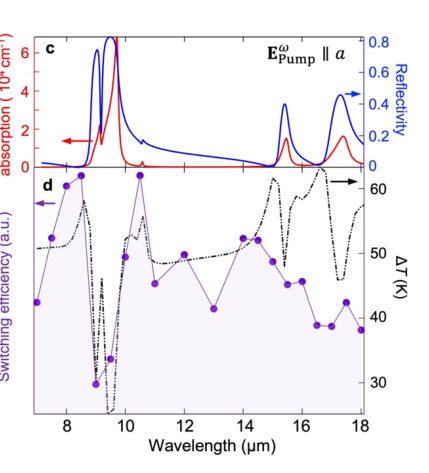
<figcaption class="paper-figure-caption"><b>Fig 4.</b> Fig.4: Spectral dependence of the switching efficiency. a,c, Absorption (red) and</figcaption>
</figure>
</div>

<p><strong>Summary.</strong> The researchers demonstrated that an antiferromagnet ($    ext{LiFePO}_4$) can have its magnetic domains deterministically switched simply by shining mid-infrared light from opposite directions. This directional switching, which persists over broad wavelengths, is attributed to the generation of nonreciprocal heat currents, establishing a general principle for light control in symmetry-broken materials.</p>
<p><strong>Why it may be interesting.</strong> This work provides a powerful example of controlling symmetry-broken quantum phases (AFMs) using thermal gradients generated by light, suggesting that nonreciprocity via energy deposition is a general principle applicable across various condensed matter systems.</p>
<details>
<summary>Detailed structure</summary>
<p><strong>Main problem.</strong> To demonstrate deterministic control over antiferromagnetic (AFM) domains using nonreciprocal heat currents generated by mid-infrared light.</p>
<p><strong>Main result.</strong> Nonreciprocal, broadband domain switching was achieved in $    ext{LiFePO}_4$ by pumping from opposite sides, confirming that directional heat current is the key mechanism, rather than specific optical resonances.</p>
<p><strong>Method.</strong> The study used pump-probe techniques with intense mid-infrared pulses ($\lambda=7-19 \mu	ext{m}$) to induce domain switching in a single crystal of $ ext{LiFePO}_4$, while using visible light for imaging the resulting domain states.</p>
<p><strong>Model / system.</strong> The system is the magnetoelectric antiferromagnet $ ext{LiFePO}_4$, which inherently breaks both space-inversion and time-reversal symmetries. The control mechanism relies on generating nonreciprocal heat currents ($\mathbf{J}_c$) that act as a directional symmetry-breaking field.</p>
<p><strong>Key observables.</strong> Domain states ($   ext{L+}$ and $  ext{L-}$), change in transmitted light intensity, and the directionality of the induced heat current.</p>
<p><strong>Important parameters / regimes.</strong> Mid-infrared wavelength range ($7–19 \mu	ext{m}$); temperature dependence around the Néel temperature ($T_N = 50 	ext{ K}$).</p>
<p><strong>Assumptions / limitations.</strong> The switching is primarily mediated by nonreciprocal heat currents ($\mathbf{J}_c$), which reverses sign upon reversing the light propagation direction, overcoming limitations of resonance-based control.</p>
<p><strong>Figures summary.</strong> Figures illustrate domain imaging showing $    ext{L+}     o   ext{L-}$ switching from one side and $  ext{L-}     o   ext{L+}$ from the opposite side. Time-resolved measurements track transient changes linked to heating, and simulations map the direction reversal of the heat current.</p>
<p><strong>Paper structure.</strong> The paper establishes the theoretical basis (symmetry breaking in AFMs) before presenting experimental evidence: first, demonstrating nonreciprocal switching using mid-IR pulses; second, attributing this effect robustly to broadband heat currents rather than resonances; and finally, ruling out simple directional dichroism mechanisms.</p>
</details>
<details>
<summary>Abstract</summary>
<p>What distinguishes front from back? In physics, such directionality emerges only when an underlying symmetry is broken. Antiferromagnets that inherently break both space-inversion and time-reversal symmetries provide a striking example, exhibiting nonreciprocal optical responses that depend on the direction of light propagation. Beyond distinguishing antiferromagnetic domains, we show that this nonreciprocity can deterministically create them. Using mid-infrared light, we demonstrate deterministic switching of antiferromagnetic domains in the magnetoelectric antiferromagnet LiFePO4, where illumination from opposite sides selectively stabilizes opposite domain states. Remarkably, the switching persists over a broad wavelength range rather than being confined to a narrow transition-specific spectral region, overcoming the spectral and material constraints of resonance-based optical switching schemes. The broadband switching originates from the material's intrinsic nonreciprocity through optically generated heat currents. Our results establish nonreciprocity as a general principle for deterministically controlling symmetry-broken phases with light.</p>
</details>
<p><sub><a href="#top">↑ back to top</a></sub></p>

<p><a id="paper-2607.04584"></a></p>
<h3 id="quantum-random-walks-on-d-regular-graphs-with-haar-random-coin-operators"><a href="http://arxiv.org/abs/2607.04584v1">Quantum random walks on d-regular graphs with Haar-random coin operators</a></h3>
<p><strong>Authors:</strong> Alice C. Quillen<br>
<strong>Type:</strong> theory · <strong>Category:</strong> other · <strong>PDF:</strong> <a href="https://arxiv.org/pdf/2607.04584v1">https://arxiv.org/pdf/2607.04584v1</a><br>
<strong>Analysis basis:</strong> full PDF text, analyzed in chunks
<strong>Topic relevance:</strong> <code>measurement-induced transitions</code> <strong>3/5</strong> · <code>quantum measurements</code> <strong>3/5</strong> · <code>entanglement &amp; information structure</code> <strong>2/5</strong> · <code>non-equilibrium dynamics</code> <strong>2/5</strong> · <code>Keldysh / 2PI / non-Gaussian methods</code> <strong>1/5</strong> · <code>correlated / nonlocal dissipation</code> <strong>1/5</strong> · <code>driven-dissipative phase transition</code> <strong>1/5</strong> · <code>methods for driven-dissipative</code> <strong>1/5</strong> · <code>non-equilibrium universality</code> <strong>1/5</strong></p>
<div class="figure-strip-hint">↔ Scroll figures horizontally</div>
<div class="paper-figures-scroll">
<figure class="paper-figure-card">
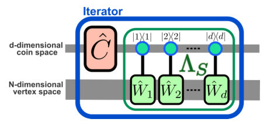
<figcaption class="paper-figure-caption"><b>Fig 1.</b> FIG. 1. A quantum circuit illustration of a quantum walk based on a d-regular graph that takes place on a quantum space that is the tensor product of a d-dimensional coin space and an N dimensional vertex space. The controlled shift op- erator ΛS (outlined in green and defined in equation 3) per- mutes the vertices with operators ˆ Wj (defined in equation 2) depending upon the graph edge that is selected via one of the states in the coined subspace. The coin operator ˆC operates on the coin-subspace where it can induce superposition. The pair of operations is outlined in blue and is iterated to carry out the walk.</figcaption>
</figure>
<figure class="paper-figure-card">
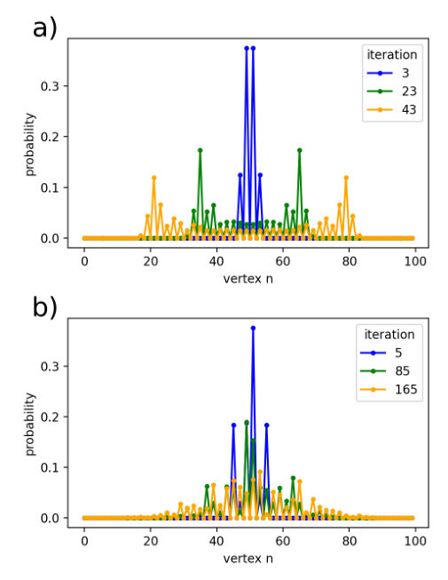
<figcaption class="paper-figure-caption"><b>Fig 2.</b> FIG. 2. a) An illustration of the quantum random walk on the cycle graph with a Hadamard-coin. The initial state was 1 √</figcaption>
</figure>
</div>

<p><strong>Summary.</strong> This paper analyzes quantum random walks where the coin operator is randomized using the Haar measure, leading to an averaged channel that mimics classical diffusion. Despite this decoherence in the coin subspace, the authors demonstrate that specific measurements on the vertex subsystem can still detect information about the initial state for certain graph types. It suggests a model useful for studying strongly perturbed quantum systems rather than search algorithms.</p>
<p><strong>Why it may be interesting.</strong> This work provides a theoretical framework for understanding how quantum coherence is lost due to environmental coupling (modeled by Haar averaging), yet retains measurable signatures of initial conditions through subsystem measurements. This touches upon concepts relevant to open quantum systems and measurement theory.</p>
<details>
<summary>Detailed structure</summary>
<p><strong>Main problem.</strong> The study investigates quantum random walks on d-regular graphs when the coin operator is randomized according to the Haar measure, analyzing information retention despite channel averaging.</p>
<p><strong>Main result.</strong> Although the averaged process depolarizes the coin subspace and resembles classical diffusion, measurements in the vertex subspace can still reveal initial state information under specific graph structures (e.g., Abelian Cayley graphs).</p>
<p><strong>Method.</strong> The analysis involves calculating the expectation value of the quantum channel over Haar-random unitaries and analyzing the evolution of correlation functions and variances.</p>
<p><strong>Model / system.</strong> The model is a discrete-time quantum random walk on a graph, defined by an evolution operator involving a controlled shift and a coin operator. The key modification is averaging the coin operation over the Haar measure.</p>
<p><strong>Key observables.</strong> Correlations between vertices ($p_{vv'}$), variance of vertex position measurements ($\sigma^2_{\hat{B}}$), and the decay/retention of initial state information.</p>
<p><strong>Important parameters / regimes.</strong> The degree $d$ of the graph, the number of steps $t$, and properties of the underlying group structure (e.g., even element orders for Abelian groups).</p>
<p><strong>Assumptions / limitations.</strong> The analysis relies on averaging over the Haar measure; it assumes that information retention can be diagnosed by measuring correlations or variances.</p>
<p><strong>Figures summary.</strong> Figure 1 illustrates the quantum circuit for the walk using a controlled shift operator. Figure 2 compares position probability distributions for cycle graphs under Hadamard vs. Haar-random coin walks, showing classical diffusion behavior for the latter.</p>
<p><strong>Paper structure.</strong> The paper progresses from defining the model with random coins to deriving the averaged channel, comparing its resulting dynamics (classical walk) to coherent walks, and finally developing diagnostic tools (correlation measurements, variance analysis) to prove information retention in specific regimes.</p>
</details>
<details>
<summary>Abstract</summary>
<p>With unitary coin operator that is a random matrix drawn from a uniform distribution with respect to the Haar measure, we construct a variant of a discrete quantum random walk using a d-regular undirected connected simple graph. With each step of the walk, the coin operator random matrix is drawn independently from the distribution. The expectation value over the distribution of random unitaries for the associated quantum channel gives a depolarization channel for the coin subspace and resembles the associated classical random walk where the direction a walker steps depends upon the outcome of a fair coin or balanced d-sided dice. Remarkably, despite the fact that the averaged channel depolarizes the coin subspace, measurements in the vertex subspace can be designed that would reveal information about the initial quantum state, even after many iterations of the channel. We illustrate with examples of quantum walks on Cayley graphs of Abelian groups, such as the cycle and hypercube graphs. These quantum walks are examples of bipartite strongly interacting systems, where one subsystem is strongly perturbed, yet information about the initial state in the other subsystem is potentially measurable forever. Due to its decoherence, a quantum random walk with a Haar-random coin would not be useful in search algorithms but could aid in understanding quantum systems with strongly perturbed subsystems.</p>
</details>
<p><sub><a href="#top">↑ back to top</a></sub></p>

<p><a id="paper-2607.05307"></a></p>
<h3 id="quantum-spectral-anomaly-detection"><a href="http://arxiv.org/abs/2607.05307v1">Quantum Spectral Anomaly Detection</a></h3>
<p><strong>Authors:</strong> Yewei Yuan, Michele Minervini, Mark M. Wilde, Nana Liu<br>
<strong>Type:</strong> both · <strong>Category:</strong> statistical mechanics · <strong>PDF:</strong> <a href="https://arxiv.org/pdf/2607.05307v1">https://arxiv.org/pdf/2607.05307v1</a><br>
<strong>Analysis basis:</strong> full PDF text, analyzed in chunks
<strong>Topic relevance:</strong> <code>driven-dissipative phase transition</code> <strong>3/5</strong> · <code>methods for driven-dissipative</code> <strong>3/5</strong> · <code>analog quantum simulation</code> <strong>2/5</strong> · <code>non-equilibrium universality</code> <strong>2/5</strong> · <code>Keldysh / 2PI / non-Gaussian methods</code> <strong>1/5</strong> · <code>correlated / nonlocal dissipation</code> <strong>1/5</strong> · <code>entanglement &amp; information structure</code> <strong>1/5</strong> · <code>non-equilibrium dynamics</code> <strong>1/5</strong> · <code>quantum measurements</code> <strong>1/5</strong></p>
<div class="figure-strip-hint">↔ Scroll figures horizontally</div>
<div class="paper-figures-scroll">
<figure class="paper-figure-card">

<figcaption class="paper-figure-caption"><b>Fig 1.</b> FIG. 1. Normal-calibrated percentile maps over [0, 1]2 for the moon dataset; the pale scattered points are the normal training data. Rows: linear classical PCA, RBF kernel-PCA, and QSPADE with a Fourier feature map. Columns: resid- ual Q, within-support T 2 (shown inside the Q-accepted re- gion), and the combined max-percentile. Linear PCA gives a rigid straight band; the kernel baseline and QSPADE both produce curved acceptance regions that follow the data. The cyan contour marks the calibrated decision boundary.</figcaption>
</figure>
<figure class="paper-figure-card">

<figcaption class="paper-figure-caption"><b>Fig 2.</b> FIG. 2. Spectrum and soft occupations of the average nor- mal state C. Black points show the eigenvalues λj(C) on a log scale, and the dotted line marks the sampling reso- lution 1/N for N = 600. The vertical dashed line marks the hard retained-mass rank K(α) = 7 for α = 0.99. Col- ored curves, read on the right axis, show the soft occupations f((λj −µα)/T) for different resolutions T. The figure shows why a hard rank is ambiguous on this graded spectrum, while QSPADE assigns fractional weights to near-cutoff modes.</figcaption>
</figure>
<figure class="paper-figure-card">
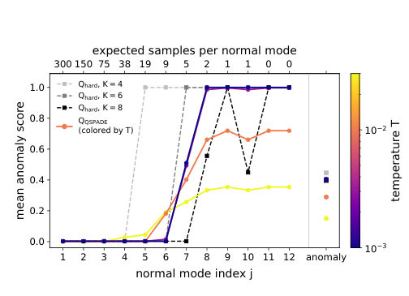
<figcaption class="paper-figure-caption"><b>Fig 3.</b> FIG. 3. Mean residual anomaly score for each normal mode j, with the expected number of training samples wjN shown on the top axis, and for the anomaly class in the rightmost col- umn. Grey dashed curves are hard top-K projectors; colored curves are QSPADE residuals at different resolutions T. Hard ranks flip whole normal modes between zero and unit score, and become unstable when the cutoff reaches the sampling- resolution regime (K = 8). QSPADE replaces this all-or- nothing behavior by a graded transition from well-sampled modes to unresolved tail modes.</figcaption>
</figure>
<figure class="paper-figure-card">

<figcaption class="paper-figure-caption"><b>Fig 4.</b> FIG. 4. Mean residual anomaly score for a dominant normal mode (50%), a rare normal mode (1.6%), and the paramag- netic anomaly class. The density-weighted Qraw and the hard K = 4 projector score the rare valid mode above the anomaly, while the hard K = 6 projector gives it zero score and hides its rarity. QSPADE assigns the rare mode an intermediate, temperature-dependent score; when T resolves the spectral tail, the rare valid mode remains below the anomaly. This shows soft scoring in QSPADE separates rarity within the normal support from genuine support mismatch.</figcaption>
</figure>
<figure class="paper-figure-card">

<figcaption class="paper-figure-caption"><b>Fig 5.</b> FIG. 5. QSPADE residual score of the TFIM ground state as the transverse field h is swept across the transition. The score is near zero at the normal training field hA = 0.4 (grey line), stays low in the ordered phase, and rises through the critical point hc = 1 (dashed) into the paramagnetic phase. Colored curves show different resolutions T; as T →0 they approach the hard retained-rank projector K(α) (black markers), while larger T gives a softer monitor. The density-weighted Qraw (dotted) is offset upward even at the normal field.</figcaption>
</figure>
</div>

<p><strong>Summary.</strong> This paper introduces Quantum Spectral Anomaly Detection (QSPADE), a novel technique to compute anomaly scores for quantum states by analyzing the spectrum of the normal data's average state. It achieves this by replacing hard spectral cutoffs with a smooth, temperature-controlled thresholding mechanism. QSPADE offers an efficient tool applicable both to encoded classical data and directly to monitoring complex quantum systems undergoing phase transitions.</p>
<p><strong>Why it may be interesting.</strong> The ability to monitor complex quantum systems (like those near phase transitions) using only local spectral information, without needing explicit knowledge of order parameters or full state reconstruction, is highly valuable for experimental diagnostics in AMO physics.</p>
<details>
<summary>Detailed structure</summary>
<p><strong>Main problem.</strong> The core task is developing an efficient method for quantum anomaly detection, quantifying how much a test quantum state deviates from a normal dataset.</p>
<p><strong>Main result.</strong> QSPADE provides a continuous, spectral-based framework that successfully detects changes across quantum phase transitions without requiring predefined order parameters.</p>
<p><strong>Method.</strong> It replaces hard PCA rank selection with a smooth, temperature-controlled spectral threshold applied to the average state's spectrum, yielding both residual and Hotelling's T^2 type anomaly scores.</p>
<p><strong>Model / system.</strong> The analysis is based on quantum data represented by density operators ($
ho_i$) whose average forms the normal support operator $C$. The method is shown to apply to monitoring quantum-native systems like the transverse-field Ising model.</p>
<p><strong>Key observables.</strong> Anomaly score (e.g., residual statistic $Q$ or Hotelling's $T^2$), spectral eigenvalues ($\lambda_j$), and acceptance probabilities $\langle\psi|M f_{\mu\alpha,T} |\psi
angle$.</p>
<p><strong>Important parameters / regimes.</strong> Temperature parameter ($T$), spectral threshold ($\mu$), target retained-mass fraction ($\alpha$), and measurement shot budget ($m$).</p>
<p><strong>Assumptions / limitations.</strong> The primary assumption is that the anomaly score can be derived solely from the spectrum of the average normal state, avoiding full Gram matrix construction.</p>
<p><strong>Figures summary.</strong> Figure 6 compares QSPADE against classical kernel-PCA baselines (Laplacian/Fourier maps performing best). Figure 7 shows QSPADE successfully tracking curved supports (ring) where linear PCA fails. Figure 8 demonstrates that smaller temperatures ($T$) improve robustness to shot noise in quantum-native experiments.</p>
<p><strong>Paper structure.</strong> The paper first establishes the classical PCA background, then introduces QSPADE as a soft spectral detector using a temperature parameter $T$. It develops theoretical proofs for this smooth detection mechanism and validates it by comparing performance against various classical kernel methods on synthetic data geometries and in quantum-native simulations.</p>
</details>
<details>
<summary>Abstract</summary>
<p>A core task in quantum anomaly detection is to compute an anomaly score that quantifies how strongly a test quantum state deviates from a given quantum dataset assumed to be normal. Classically, principal component analysis (PCA) for centered data computes the anomaly score by evaluating the test sample relative to the subspace spanned by the selected leading eigenvectors. However, for quantum data that lack a standard centering, explicitly recovering principal eigenvectors, constructing full Gram matrices, or loading quantum-random-access-memory-style data can be more costly than estimating the anomaly score itself. To avoid these costs, we propose Quantum Spectral Anomaly Detection (QSPADE), which computes PCA-like anomaly scores directly from the spectrum of the average state of the normal dataset. By replacing hard PCA rank selection with a smooth, temperature-controlled spectral threshold, QSPADE makes near-threshold spectral components contribute partially to the anomaly score. This makes the score vary continuously rather than jump when a borderline component is included or excluded, and makes it less sensitive to noise or arbitrary hard cutoffs near the threshold. In the zero-temperature limit, QSPADE recovers the hard-projector PCA score. The proposed measurement-based quantum detector can be calibrated with a sample complexity independent of the data dimension. Numerical simulations show that QSPADE behaves like kernel-PCA on encoded classical data and detects changes across a transverse-field Ising transition without predefined order parameters. Consequently, QSPADE gives an efficient framework for both quantum-kernel anomaly detection on encoded classical data and the monitoring of quantum-native systems where diagnostic observables are unknown.</p>
</details>
<p><sub><a href="#top">↑ back to top</a></sub></p>

<p><a id="paper-2607.03845"></a></p>
<h3 id="quantum-tunneling-mpemba-effect"><a href="http://arxiv.org/abs/2607.03845v1">Quantum tunneling Mpemba effect</a></h3>
<p><strong>Authors:</strong> Hisao Hayakawa, Satoshi Takada<br>
<strong>Type:</strong> theory · <strong>Category:</strong> statistical mechanics · <strong>PDF:</strong> <a href="https://arxiv.org/pdf/2607.03845v1">https://arxiv.org/pdf/2607.03845v1</a><br>
<strong>Analysis basis:</strong> full PDF text, analyzed in chunks
<strong>Topic relevance:</strong> <code>driven-dissipative phase transition</code> <strong>3/5</strong> · <code>methods for driven-dissipative</code> <strong>3/5</strong> · <code>non-equilibrium dynamics</code> <strong>3/5</strong> · <code>non-equilibrium universality</code> <strong>3/5</strong> · <code>Keldysh / 2PI / non-Gaussian methods</code> <strong>1/5</strong> · <code>Kondo &amp; dissipative impurity</code> <strong>1/5</strong> · <code>correlated / nonlocal dissipation</code> <strong>1/5</strong></p>
<div class="figure-strip-hint">↔ Scroll figures horizontally</div>
<div class="paper-figures-scroll">
<figure class="paper-figure-card">

<figcaption class="paper-figure-caption"><b>Fig 1.</b> FIG. 1. Initial temperature dependence of an(Ti) for n = 0, 1, 2, and 3 when we fix L = 5, η = 5, and xabs = 4.</figcaption>
</figure>
<figure class="paper-figure-card">

<figcaption class="paper-figure-caption"><b>Fig 2.</b> Figure 2 shows plots of a2(Ti) against Ti for various system size L under the condition Eq. (46). This figure indicates that the peak position around Ti = 3.26 is independent of the system size L. This result supports the theoretical prediction in the previous section and Appendix C.</figcaption>
</figure>
<figure class="paper-figure-card">

<figcaption class="paper-figure-caption"><b>Fig 3.</b> FIG. 2. Plots of a2(Ti) against Ti for various L when we fix η = 5, and xabs = 4.</figcaption>
</figure>
<figure class="paper-figure-card">

<figcaption class="paper-figure-caption"><b>Fig 4.</b> Figure 3 shows the time evolution of the survival probability S(t, Ti) for various Ti using Eq. (46). This clearly exhibits the crossing of S(t, Ti) during the time evolution. Remarkably, the crossing time is insensitive to Ti, where</figcaption>
</figure>
<figure class="paper-figure-card">
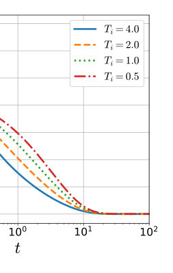
<figcaption class="paper-figure-caption"><b>Fig 5.</b> FIG. 3. Plots of time evolution of S(t, Ti) for various Ti when we fix L = 5, η = 5, and xabs = 4.</figcaption>
</figure>
</div>

<p><strong>Summary.</strong> This paper theoretically investigates the quantum tunneling Mpemba effect in an open double-well potential system. Using non-Hermitian spectral methods, the authors prove that the characteristic anomalous cooling signature is a universal topological property independent of the system size L. This offers novel insights for engineering non-equilibrium states via controlled boundary dissipation.</p>
<p><strong>Why it may be interesting.</strong> This work provides a rigorous theoretical framework for observing non-equilibrium phenomena like the Mpemba effect in quantum systems by connecting it to fundamental mathematical properties (Sturm-Liouville theorem) within open quantum dynamics.</p>
<details>
<summary>Detailed structure</summary>
<p><strong>Main problem.</strong> The paper investigates the quantum tunneling Mpemba effect, a counterintuitive relaxation phenomenon where hotter systems cool faster than cooler ones, in an open quantum setting.</p>
<p><strong>Main result.</strong> It proves that the non-monotonic behavior of key spectral coefficients is a universal topological property governed by Sturm-Liouville theory and is invariant with respect to system size L, contrasting classical boundary effects.</p>
<p><strong>Method.</strong> The analysis uses non-Hermitian spectral decomposition on an effective Hamiltonian derived from the GKSL master equation, employing biorthogonal quantum mechanics.</p>
<p><strong>Model / system.</strong> The model is a single particle in a continuous one-dimensional symmetric double-well potential open to environmental sinks at boundaries (modeled by a Continuous Absorbing Potential).</p>
<p><strong>Key observables.</strong> Non-monotonic behavior of the first non-trivial even-parity spectral coefficient ($a_{2}(T_{i})$), total survival probability trace $S(t, T_i)$, and trace distance $\mathcal{D}(t, T_i)$.</p>
<p><strong>Important parameters / regimes.</strong> Initial temperature ($T_i$), system size ($L$), and the ratio of decay rates ($\Gamma_2 \gg \Gamma_0$ and $\Gamma_2 \gg \Gamma_1$).</p>
<p><strong>Assumptions / limitations.</strong> The analysis assumes permanent absorption at boundaries (no recycling) and requires a strict separation of timescales for observation.</p>
<p><strong>Paper structure.</strong> The paper progresses by setting up the open quantum system dynamics via the non-Hermitian Hamiltonian, analyzing relaxation using spectral decomposition, proving the topological nature of the Mpemba signature in coefficients, and finally demonstrating its size invariance compared to classical models.</p>
</details>
<details>
<summary>Abstract</summary>
<p>The quantum tunneling Mpemba effect is investigated within a continuous one-dimensional symmetric double-well potential open to external environmental sinks at the boundaries ($x=\pm L$). Using a non-Hermitian spectral decomposition of the effective Hamiltonian, we characterize the open-system relaxation dynamics without relying on abstract state-space quenches. We mathematically prove that the non-monotonic behavior of the first non-trivial even-parity spectral coefficient, $a_{2}(T_{i})$, with respect to the initial preparation temperature $T_{i}$ is a universal topological property born from quantum statistical mechanics. Crucially, we demonstrate that this intermediate thermal peak is governed by the Sturm-Liouville oscillation theorem and remains completely invariant with respect to the global system size $L$, contrasting sharply with the boundary-driven classical Mpemba effect. This universal peak arises from the geometric and nodal alignment between highly localized unperturbed states and extended non-Hermitian decay channels. Furthermore, we clarify that while this mechanism is robust, the actual observation of anomalous crossings in the total survival probability trace $S(t,T_{i})$ and the trace distance $\mathcal{D}(t,T_i)$ demand a strict separation of timescales, requiring the over-barrier escape rate to vastly exceed the decay rate of the deep-well tunneling doublet ($Γ_{2}\gg Γ_{0}$ and $Γ_2\gg Γ_1$). Our continuous formulation successfully bridges real-space classical boundary-driven dissipation with open quantum dynamics, providing novel insights for engineering non-equilibrium states via tailored boundary loss.</p>
</details>
<p><sub><a href="#top">↑ back to top</a></sub></p>

<p><a id="paper-2607.04549"></a></p>
<h3 id="speed-limits-on-biomolecular-processes-from-fundamental-physical-constants"><a href="http://arxiv.org/abs/2607.04549v1">Speed limits on biomolecular processes from fundamental physical constants</a></h3>
<p><strong>Authors:</strong> Dmitrii E Makarov<br>
<strong>Type:</strong> theory · <strong>Category:</strong> statistical mechanics · <strong>PDF:</strong> <a href="https://arxiv.org/pdf/2607.04549v1">https://arxiv.org/pdf/2607.04549v1</a><br>
<strong>Analysis basis:</strong> full PDF text, analyzed in chunks
<strong>Topic relevance:</strong> <code>methods for driven-dissipative</code> <strong>3/5</strong> · <code>non-equilibrium dynamics</code> <strong>3/5</strong> · <code>correlated / nonlocal dissipation</code> <strong>2/5</strong> · <code>driven-dissipative phase transition</code> <strong>2/5</strong> · <code>non-equilibrium universality</code> <strong>2/5</strong> · <code>Frenkel-Kontorova</code> <strong>1/5</strong> · <code>Keldysh / 2PI / non-Gaussian methods</code> <strong>1/5</strong> · <code>Kondo &amp; dissipative impurity</code> <strong>1/5</strong></p>
<div class="figure-strip-hint">↔ Scroll figures horizontally</div>
<div class="paper-figures-scroll">
<figure class="paper-figure-card">
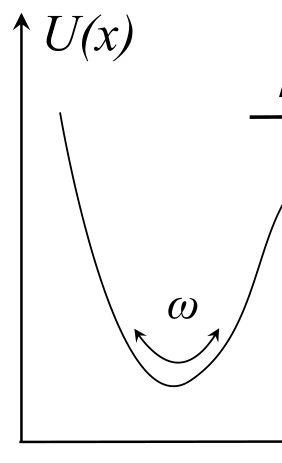
<figcaption class="paper-figure-caption"><b>Fig 1.</b> Figure 1. Kramers’ model of a chemical reaction</figcaption>
</figure>
</div>

<p><strong>Summary.</strong> This paper explores how fundamental physical constants impose speed limits on biological processes like chemical reactions and protein folding. By applying theories such as Kramers' rate theory and analyzing molecular diffusion, the authors derive characteristic timescales for these biomolecular events. The results suggest that life requires specific constraints on energy barriers relative to thermal energy ($A$), linking quantum mechanics directly to biochemistry.</p>
<p><strong>Why it may be interesting.</strong> The work bridges concepts from chemical reaction rate theory (Kramers/Eyring) with mesoscopic dynamics (diffusion), providing quantitative bounds derived from fundamental physics that are relevant to open quantum systems modeling where dissipation is key.</p>
<details>
<summary>Detailed structure</summary>
<p><strong>Main problem.</strong> The paper investigates fundamental physical constraints that set speed limits on various biomolecular processes, such as chemical reaction rates and protein folding dynamics.</p>
<p><strong>Main result.</strong> It derives quantitative estimates for characteristic timescales (e.g., $   au_{diff}$, $   au_{kin}$) based on fundamental constants, suggesting specific ranges required for life to exist.</p>
<p><strong>Method.</strong> The analysis employs theoretical frameworks like Arrhenius theory, Kramers' rate theory, and models molecular motion using the Langevin equation, comparing estimates derived from different physical approximations.</p>
<p><strong>Model / system.</strong> The systems studied include elementary chemical reactions, protein folding dynamics modeled as random coil diffusion, and general molecular motion in solution governed by friction and potential energy landscapes.</p>
<p><strong>Key observables.</strong> Arrhenius ratio ($A$), diffusivity ($D$), kinetic time ($  au_{kin}$), and characteristic timescales for diffusion ($ au_{diff}$) and reaction rates ($
u$).</p>
<p><strong>Important parameters / regimes.</strong> Fundamental constants like $\hbar, k_B, T$, molecular parameters (mass $m$, radius $R$), and energy barriers ($E_b$). The required range for the Arrhenius ratio is highlighted as $38 < A < 70$.</p>
<p><strong>Assumptions / limitations.</strong> The analysis relies on approximations such as using the Stokes formula for friction, assuming specific damping regimes (e.g., overdamped dynamics for large-scale motion), and employing an anthropic argument to constrain physical constants.</p>
<p><strong>Figures summary.</strong> Figure 1 illustrates Kramers’ model for a chemical reaction rate calculation.</p>
<p><strong>Paper structure.</strong> The paper progresses by first establishing the general framework using fundamental constants to set limits on rates (Arrhenius/Eyring). It then applies this to specific systems: molecular diffusion ($   au_{diff}$), and finally, protein folding kinetics, comparing different theoretical estimates for reconfiguration time ($    au_r$).</p>
</details>
<details>
<summary>Abstract</summary>
<p>Many of the timescales of life have speed limits set by quantum-mechanical constraints along with non-fundamental quantities, such as the temperature of the environment, which are however bounded by anthropic considerations. Here, some of such speed limits are examined, including those for the rates of elementary chemical reactions and biomolecular folding. Limitations of simple back-of-envelope estimates are also discussed.</p>
</details>
<p><sub><a href="#top">↑ back to top</a></sub></p>

<p><a id="paper-2607.03545"></a></p>
<h3 id="cellular-adaptation-to-signal-fluctuations-as-learning"><a href="http://arxiv.org/abs/2607.03545v1">Cellular Adaptation to Signal Fluctuations as Learning</a></h3>
<p><strong>Authors:</strong> Tuan Minh Pham, David Saad<br>
<strong>Type:</strong> theory · <strong>Category:</strong> disordered systems and neural networks · <strong>PDF:</strong> <a href="https://arxiv.org/pdf/2607.03545v1">https://arxiv.org/pdf/2607.03545v1</a><br>
<strong>Analysis basis:</strong> full PDF text, analyzed in chunks
<strong>Topic relevance:</strong> <code>driven-dissipative phase transition</code> <strong>3/5</strong> · <code>methods for driven-dissipative</code> <strong>3/5</strong> · <code>non-equilibrium dynamics</code> <strong>2/5</strong> · <code>non-equilibrium universality</code> <strong>2/5</strong> · <code>Frenkel-Kontorova</code> <strong>1/5</strong> · <code>Keldysh / 2PI / non-Gaussian methods</code> <strong>1/5</strong> · <code>correlated / nonlocal dissipation</code> <strong>1/5</strong> · <code>entanglement &amp; information structure</code> <strong>1/5</strong></p>
<div class="figure-strip-hint">↔ Scroll figures horizontally</div>
<div class="paper-figures-scroll">
<figure class="paper-figure-card">

<figcaption class="paper-figure-caption"><b>Fig 1.</b> FIG. 1. Top. Illustration of an intracellular pathway (marked by the shaded area) of effectors (labeled by h) and target genes (denoted by s). The pathway is subjected to fluctuations of an external signal depicted by x. Bottom. Our microscopic model (7)-(8) and its corre- sponding macroscopic theory in terms of collective covariances (14)- (15). Here fluctuations vary over a slow time τ. The M effectors integrate these fluctuations into their states hℓ(τ) via an interpreta- tion matrix Jℓα (denoted by black arrows): hℓ(τ) = P</figcaption>
</figure>
<figure class="paper-figure-card">

<figcaption class="paper-figure-caption"><b>Fig 2.</b> FIG. 2. The target gene correlations T , the effectors’ covariations Q, the cross-correlations between the target genes and their effectors R, all as function of the slow time τ for (η, γ) = (0.5, 0.5) in (a)-(c) (η, γ) = (0.9, 0.5) in (d)-(f) for (η, γ) = (0.9, 0.9) in (g)-(i). Here c = 0.2, σ = 0.01, K = 4 and W is a random asymmetric matrix of i.i.d. elements drawn from U(0, 1) – the uniform distribution in the interval (0, 1). Initial conditions for Q and T are specified by Qii and Tii, both drawn from U(0, 1), while Qij and Tij – are sampled from the uniform distribution 10−6 × U(0, 1). All elements of R(τ = 0) are drawn from the uniform distribution 10−6 × U(0, 1).</figcaption>
</figure>
<figure class="paper-figure-card">

<figcaption class="paper-figure-caption"><b>Fig 3.</b> FIG. 3. γ = 0.5 (a) and γ = 1 (b). Here c = 0.2, σ = 0.01, K = 4, and W is an asymmetric matrix of uncorrelated elements drawn from U(0, 1) – the uniform distribution in the interval (0, 1). Initial conditions for Q and T are specified by Qii and Tii, both drawn from U(0, 1), while Qij and Tij – are sampled from the uniform distribution 10−6 × U(0, 1). All elements of R(τ = 0) are drawn from the uniform distribution 10−6 × U(0, 1).</figcaption>
</figure>
<figure class="paper-figure-card">

<figcaption class="paper-figure-caption"><b>Fig 4.</b> FIG. 6. Phase diagram for c = 0.2, σ = 0.01, K = 4. Results are obtained by averaging over an ensemble of 100 asymmetric matrices W of uncorrelated elements drawn from U(0, 1). Asymmetric initial condition for Q, T , R as explained in Fig 2.</figcaption>
</figure>
<figure class="paper-figure-card">
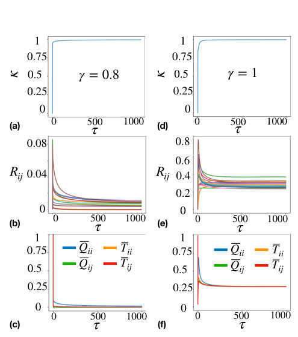
<figcaption class="paper-figure-caption"><b>Fig 5.</b> FIG. 4. Symmetric solution for γ = 0.8 ((a)-(c)) and γ = 1 ((d)-(e)). From top to bottom: the ratio κ = ¯r/¯q with ¯r ≡</figcaption>
</figure>
</div>

<p><strong>Summary.</strong> This paper develops a multiscale theory to explain how cells achieve robust gene expression against environmental noise by implementing active self-regulation. It models the system using coupled dynamics between fast genetic circuits and slow adaptation mechanisms that learn from signal fluctuations. The key finding is that this robustness manifests as a transition in the collective modes of the network, which can be mathematically characterized by symmetry breaking and multistability.</p>
<p><strong>Why it may be interesting.</strong> While focused on biology, the mathematical framework—using mean-field approximations, analyzing collective modes via covariance matrices, and identifying phase transitions/bifurcations in an adaptive learning context—shares deep theoretical parallels with concepts studied in disordered systems and neural network optimization landscapes.</p>
<details>
<summary>Detailed structure</summary>
<p><strong>Main problem.</strong> The study investigates how biological cells maintain robust gene expression despite fluctuating external chemical signals (morphogens). The core question is whether this robustness arises from active self-regulation rather than simple noise damping.</p>
<p><strong>Main result.</strong> Robustness against signal fluctuations emerges beyond a critical adaptation rate, which is characterized by the system transitioning to structured collective modes. The theory predicts multistability in the adaptive dynamics.</p>
<p><strong>Method.</strong> The authors develop a multiscale model separating fast gene-regulatory network (GRN) dynamics from slow, non-equilibrium learning processes governing signal interpretation. Macroscopic theory is derived using order parameters representing covariances between system components.</p>
<p><strong>Model / system.</strong> The model uses a signaling pathway framework involving target genes ($s_i$) with fast dynamics and upstream effectors ($h_k$) whose adaptation variables evolve slowly based on minimizing an error functional ($\epsilon$).</p>
<p><strong>Key observables.</strong> Collective modes (covariations) such as $T(	au)$ (target gene covariance), $Q(	au)$ (effector correlation), and $\Delta Q = Q_{ii} - Q_{ij}$ (gap characterizing symmetry breaking).</p>
<p><strong>Important parameters / regimes.</strong> Adaptation rate ($\eta$), effector coupling strength ($\gamma$), and the timescale separation between fast and slow dynamics.</p>
<p><strong>Assumptions / limitations.</strong> Key assumptions include treating signal fluctuations as uncorrelated noise, assuming additivity for the control term in gene dynamics, and linearizing the analysis by expanding around a symmetric solution ($\epsilon \ll 1$).</p>
<p><strong>Figures summary.</strong> Figure 8 illustrates multistability by plotting the ratio $\kappa = ar{r}/ar{q}$ versus adaptation rate $\eta$. Figure 9 shows how the symmetry-breaking gap $\Delta Q$ increases as $\eta$ crosses a critical point.</p>
<p><strong>Paper structure.</strong> The paper establishes the physical model, derives the macroscopic theory using order parameters for covariances, and then analyzes the stability and bifurcation points (multistability) of the slow adaptive dynamics by linearizing around symmetric solutions.</p>
</details>
<details>
<summary>Abstract</summary>
<p>Cells represent one of the most fundamental units of life. Underlying their robust performance against environmental variability, such as temporal fluctuations of chemical signals, between different cell types, is a dynamical interrelation between the two components of an intracellular pathway: a gene-regulatory network and its upstream signal transducers. To understand how a single cell utilizes this feedback to self-regulate its gene-expressions, we develop a multiscale model of the pathway's components, in which the adaptive variables responsible for signal interpretation follow a feedback-induced learning process. We then derive a macroscopic theory capturing the covariations between these components - so-called collective modes. Our theory shows how cells can achieve robust output against signal fluctuations via self-regulation rather than simple noise suppression. Such robustness corresponds to a transition from random- to structured collective modes beyond a critical adaptation rate.</p>
</details>
<p><sub><a href="#top">↑ back to top</a></sub></p>

<p><a id="paper-2607.03737"></a></p>
<h3 id="intermittency-signatures-in-the-deformation-of-a-passive-droplet-in-active-turbulence"><a href="http://arxiv.org/abs/2607.03737v1">Intermittency Signatures in the Deformation of a Passive Droplet in Active Turbulence</a></h3>
<p><strong>Authors:</strong> Sudeep Halder, Abhishek Chaudhuri<br>
<strong>Type:</strong> theory · <strong>Category:</strong> statistical mechanics · <strong>PDF:</strong> <a href="https://arxiv.org/pdf/2607.03737v1">https://arxiv.org/pdf/2607.03737v1</a><br>
<strong>Analysis basis:</strong> full PDF text, analyzed in chunks
<strong>Topic relevance:</strong> <code>non-equilibrium dynamics</code> <strong>3/5</strong> · <code>non-equilibrium universality</code> <strong>3/5</strong> · <code>driven-dissipative phase transition</code> <strong>2/5</strong> · <code>Frenkel-Kontorova</code> <strong>1/5</strong> · <code>Keldysh / 2PI / non-Gaussian methods</code> <strong>1/5</strong> · <code>analog quantum simulation</code> <strong>1/5</strong> · <code>correlated / nonlocal dissipation</code> <strong>1/5</strong> · <code>entanglement &amp; information structure</code> <strong>1/5</strong> · <code>methods for driven-dissipative</code> <strong>1/5</strong></p>
<div class="figure-strip-hint">↔ Scroll figures horizontally</div>
<div class="paper-figures-scroll">
<figure class="paper-figure-card">
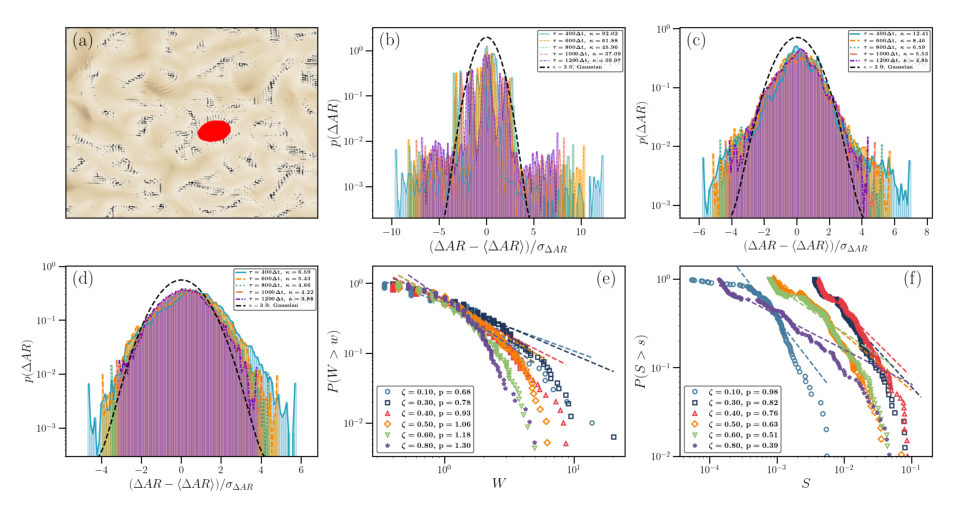
<figcaption class="paper-figure-caption"><b>Fig 1.</b> FIG. 1. Intermittent deformation of a passive droplet. (a) Snapshot of the deformable droplet</figcaption>
</figure>
<figure class="paper-figure-card">

<figcaption class="paper-figure-caption"><b>Fig 2.</b> FIG. 2. (Color online) Structure functions and multiscaling of droplet-shape increments. (a) Log–</figcaption>
</figure>
<figure class="paper-figure-card">

<figcaption class="paper-figure-caption"><b>Fig 3.</b> FIG. 3. (Color online) Normalized power spectral densities versus the activity-scaled frequency</figcaption>
</figure>
</div>

<p><strong>Summary.</strong> This work simulates the deformation of a passive droplet within active nematic turbulence to characterize its fluctuation statistics. The research finds that the droplet exhibits strong temporal intermittency, which is most pronounced at low activity levels. By comparing the spectral signatures of deformation versus the driving forces, the authors demonstrate that interfacial restoring forces act as a nonlinear filter shaping the bursty dynamics.</p>
<p><strong>Why it may be interesting.</strong> While focused on classical fluid dynamics, the analysis of non-Gaussianity, intermittency scaling laws, and filtering mechanisms ($\omega^{-1}$ vs $\omega^{-2}$) provides a rich framework for understanding energy dissipation and rare events in complex, non-equilibrium many-body systems relevant to quantum field theories or open quantum systems.</p>
<details>
<summary>Detailed structure</summary>
<p><strong>Main problem.</strong> The study investigates whether fluctuations generated by active turbulence are effectively Gaussian or exhibit intermittency when a soft inclusion deforms within the turbulent flow.</p>
<p><strong>Main result.</strong> Droplet deformation is strongly intermittent, with normalized intermittency being strongest at lower activity. The droplet acts as a nonlinear elastic filter, converting forcing into bursty, scale-rich dynamics.</p>
<p><strong>Method.</strong> The authors employed fully resolved nematohydrodynamic simulations to analyze the statistical properties of the droplet's aspect ratio increments and associated fluctuations.</p>
<p><strong>Model / system.</strong> The system models a passive nematic droplet embedded in two-dimensional extensile active-nematic turbulence, governed by Beris-Edwards Q-tensor hydrodynamics. The dynamics include standard viscous terms, an active stress term ($\sigma_A$), and interfacial tension forces ($f_I$).</p>
<p><strong>Key observables.</strong> Aspect Ratio (AR(t)), increment statistics ($\Delta 	ext{AR}$), structure functions ($S_p(	au)$), waiting times ($W$) and burst sizes ($S$), and Power Spectral Density (PSD) of the normal interface velocity.</p>
<p><strong>Important parameters / regimes.</strong> Activity parameter ($\zeta$), time lag ($   au$), and various moments $p$ for structure function analysis.</p>
<p><strong>Assumptions / limitations.</strong> The analysis uses a one-elastic-constant approximation and models the droplet using continuum hydrodynamics in 2D. The comparison reveals that interfacial restoring forces filter the fluctuations.</p>
<p><strong>Figures summary.</strong> Figures illustrate PDFs of aspect-ratio increments, CCDFs for waiting times and burst sizes showing power laws, structure functions vs lag ($  au$), and normalized PSDs comparing interface velocity to active stress forcing.</p>
<p><strong>Paper structure.</strong> The paper progresses from setting up the nematohydrodynamic model (including active and interfacial stresses) to analyzing advanced statistical diagnostics like multiscaling, burst statistics, and spectral comparisons between deformation and forcing signals.</p>
</details>
<details>
<summary>Abstract</summary>
<p>We use fully resolved nematohydrodynamic simulations to study deformation statistics of a passive nematic droplet in two-dimensional extensile active-nematic turbulence. We find that the droplet aspect ratio serves as a scalar probe of the active bath. Its increments show heavy-tailed distributions with dependence on the time lag, scale-free burst statistics and multiscaling structure functions which establish temporal intermittency. While the mean deformation increases with activity, normalized intermittency is strongest at lower activity. This suggests slower and more coherent bath forcing. When compared with translational and forcing-side fluctuations, it reveals a hierarchy of intermittency: shape is more weakly intermittent than translation and active-stress fluctuations, consistent with filtering by interfacial restoring forces. Power spectra show an extended near-$1/ω$ regime for the maximal normal interface velocity, distinct from the steeper, approximately $1/ω^{2}$ spectrum of the interfacial active stress. Soft inclusions thus reveal how interfacial restoring forces convert active forcing into bursty, scale-rich deformation dynamics.</p>
</details>
<p><sub><a href="#top">↑ back to top</a></sub></p>

<p><a id="paper-2607.05269"></a></p>
<h3 id="excitation-spectra-and-rank-tomography-of-linear-matrix-product-tangent-spaces"><a href="http://arxiv.org/abs/2607.05269v1">Excitation spectra and rank tomography of linear matrix product tangent spaces</a></h3>
<p><strong>Authors:</strong> Otto T. P. Schmidt, Iacopo Carusotto<br>
<strong>Type:</strong> theory · <strong>Category:</strong> numerical methods · <strong>PDF:</strong> <a href="https://arxiv.org/pdf/2607.05269v1">https://arxiv.org/pdf/2607.05269v1</a><br>
<strong>Analysis basis:</strong> full PDF text, analyzed in chunks
<strong>Topic relevance:</strong> <code>analog quantum simulation</code> <strong>3/5</strong> · <code>entanglement &amp; information structure</code> <strong>3/5</strong> · <code>methods for driven-dissipative</code> <strong>3/5</strong> · <code>non-equilibrium dynamics</code> <strong>2/5</strong> · <code>Keldysh / 2PI / non-Gaussian methods</code> <strong>1/5</strong> · <code>driven-dissipative phase transition</code> <strong>1/5</strong></p>
<div class="figure-strip-hint">↔ Scroll figures horizontally</div>
<div class="paper-figures-scroll">
<figure class="paper-figure-card">
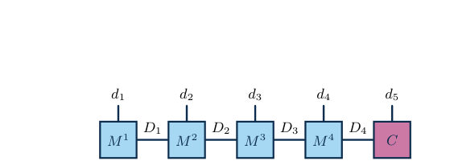
<figcaption class="paper-figure-caption"><b>Fig 1.</b> FIG. 1. A MPS representation in left-canonical gauge of an order-five projective tensor [T].</figcaption>
</figure>
<figure class="paper-figure-card">
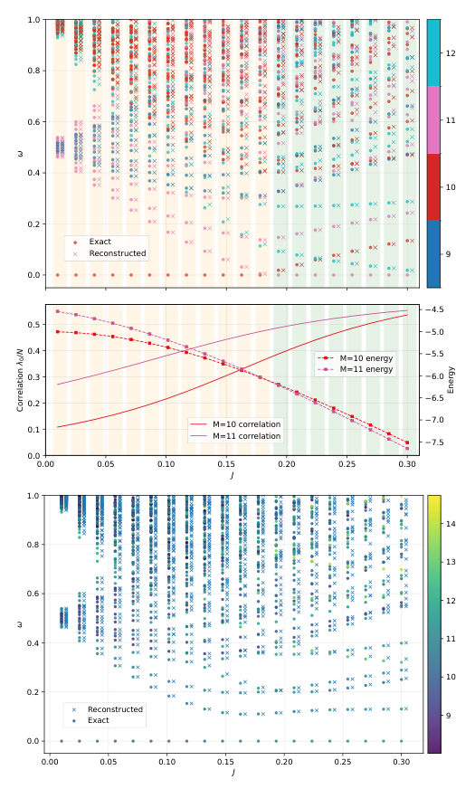
<figcaption class="paper-figure-caption"><b>Fig 2.</b> FIG. 3. Exact excitation energies (coloured dots) and tangent-space reconstructions (coloured crosses) for an N = 10 Bose–Hubbard chain with bond dimension D = 8, local dimension d = 3, and chemical potential µ/U = 0.5. Results are shown for the particle-number conserving Hamiltonian with U(1)-breaking term η = 0 (top) and for the symmetry- breaking Hamiltonian with η = 0.01 (bottom). For η = 0, colours identify the particle-number sectors M. For η ̸= 0, particle number is not conserved and the continuous colour scale indicates the expectation value ⟨ˆ M⟩of each state. The ground-state energies and off-diagonal coherence for η = 0 as- sociated with the M = 10 and M = 11 sectors are also...</figcaption>
</figure>
<figure class="paper-figure-card">
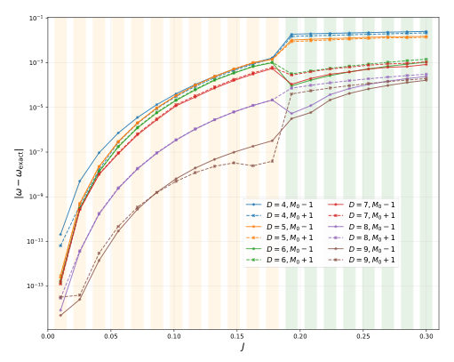
<figcaption class="paper-figure-caption"><b>Fig 3.</b> FIG. 4. Approximation error |ω −ωexact| for the lowest exci- tation modes of the BH model in number sectors M = M0 ±1 for N = 10, µ = 0.5, d = 3 and different bond dimensions D. The shaded regions indicate different rank profiles rℓ(m); see Section V B.</figcaption>
</figure>
<figure class="paper-figure-card">
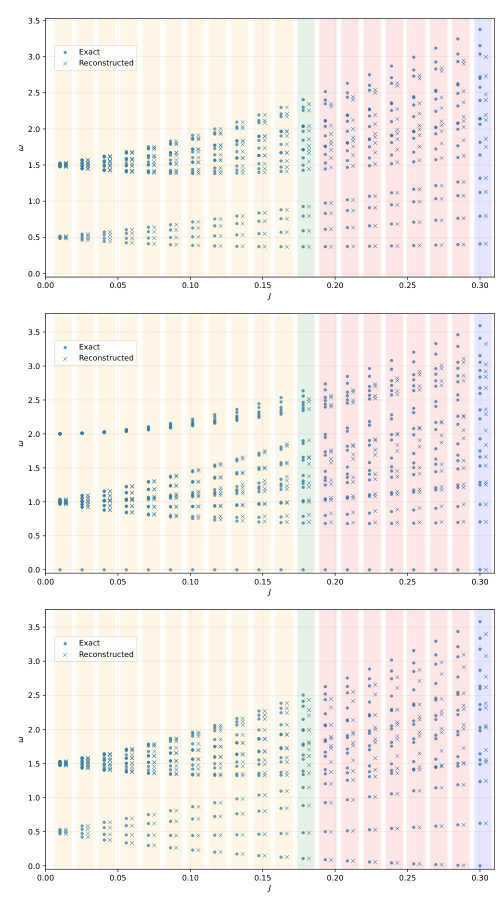
<figcaption class="paper-figure-caption"><b>Fig 4.</b> FIG. 5. Exact spectrum (blue dots) and the reconstructed spectrum (blue crosses) for N = 4, D = 5, µ = 0.5. Excita- tions in number sectors 3, 4 and 5 are shown in top, middle and bottom, respectively. The shaded regions indicate differ- ent rank profiles of rl(m).</figcaption>
</figure>
<figure class="paper-figure-card">

<figcaption class="paper-figure-caption"><b>Fig 5.</b> FIG. 6. Exact spectrum (coloured dots) and the reconstructed spectrum (blue crosses) for N = 3, D = 3, µ = 0.5. The colour scale indicates the particle-number sectors of the exci- tations.</figcaption>
</figure>
</div>

<p><strong>Summary.</strong> The paper introduces a sophisticated geometric framework to study quantum many-body dynamics by treating the space of Matrix Product States as an algebraic variety. It develops a 'rank tomography' tool using particle-resolved rank profiles, which refines the characterization of system expressivity beyond simple bond dimensions. This method is successfully applied to approximate excitation spectra for models like the Bose-Hubbard model.</p>
<p><strong>Why it may be interesting.</strong> This work bridges advanced algebraic geometry (variety smoothness, rank tomography) with condensed matter physics simulation. The development of PRSR offers a physically motivated refinement over standard bond dimension analysis for characterizing quantum entanglement and state structure.</p>
<details>
<summary>Detailed structure</summary>
<p><strong>Main problem.</strong> To develop a rigorous method using tangent spaces on the manifold of Matrix Product States (MPS) to accurately calculate the low-lying excitation spectra of quantum many-body systems with open boundary conditions.</p>
<p><strong>Main result.</strong> The proposed tangent-space and rank tomography methods successfully reproduce known low-energy excitations for benchmark models like the Bose-Hubbard model, providing a geometrically grounded way to approximate dynamics within constrained variational spaces.</p>
<p><strong>Method.</strong> The authors formulate the problem by defining the MPS space as an algebraic variety and projecting the time evolution onto its tangent space. They introduce 'rank tomography' using Particle-Resolved Schmidt Rank Profiles (PRSR) to characterize the expressivity of this manifold.</p>
<p><strong>Model / system.</strong> The primary application is to quantum many-body systems, benchmarked by the Bose-Hubbard model Hamiltonian ($H = -J \sum (\dots) + U \sum n(n-1) - \mu \sum n$). The analysis focuses on truncating the local Hilbert space (e.g., $n_i=0, 1, 2$) and treating the state within the MPS variational manifold.</p>
<p><strong>Key observables.</strong> Excitation spectra ($\omega$), Particle-Resolved Schmidt Rank Profile (PRSR), and the generalized eigenvalue problem solutions derived from projecting dynamics onto the horizontal tangent space.</p>
<p><strong>Important parameters / regimes.</strong> Hopping amplitude ($J$), on-site interaction ($U$), chemical potential ($\mu$), and bond dimensions ($D$).</p>
<p><strong>Assumptions / limitations.</strong> The method relies on approximating the true spectrum by diagonalizing an effective Hamiltonian projected onto the tangent space, which is derived from enforcing the Dirac-Frenkel condition. The analysis also assumes specific smoothness properties of related algebraic varieties.</p>
<p><strong>Figures summary.</strong> Figure 1 illustrates the MPS representation in a left-canonical gauge; Figure 3 compares the exact and reconstructed low-energy spectra for the Bose-Hubbard model, showing agreement between methods.</p>
<p><strong>Paper structure.</strong> The paper first establishes the geometric framework by defining the MPS space as an algebraic variety and proving its smoothness. It then develops the tangent-space projection method (TDVP) to derive a reduced eigenvalue problem ($    ext{Bred}y = \omega y$) for calculating excitations, culminating in benchmarking this against the Bose-Hubbard model.</p>
</details>
<details>
<summary>Abstract</summary>
<p>We formulate a tangent-space method for algebraic varieties of matrix product states (MPS) to study excitation spectra of non-uniform quantum many-body systems with open boundary conditions. We further introduce a rank tomography of the MPS tangent space, which characterizes its expressivity in terms of particle-sector rank profiles of the underlying MPS variety. Using the Bose--Hubbard model as a benchmark, we illustrate that the method reproduces low-lying excitations and captures finite-size precursors of the Mott-insulator to superfluid transition.</p>
</details>
<p><sub><a href="#top">↑ back to top</a></sub></p>

<p><a id="paper-2607.03722"></a></p>
<h3 id="free-energies-and-optimal-reaction-coordinates-via-entropy-production"><a href="http://arxiv.org/abs/2607.03722v1">Free energies and optimal reaction coordinates via entropy production</a></h3>
<p><strong>Authors:</strong> Jérémy Diharce, Line Mouaffac, Axel Dian, Fabio Pietrucci<br>
<strong>Type:</strong> theory · <strong>Category:</strong> statistical mechanics · <strong>PDF:</strong> <a href="https://arxiv.org/pdf/2607.03722v1">https://arxiv.org/pdf/2607.03722v1</a><br>
<strong>Analysis basis:</strong> full PDF text, analyzed in chunks
<strong>Topic relevance:</strong> <code>methods for driven-dissipative</code> <strong>3/5</strong> · <code>non-equilibrium dynamics</code> <strong>3/5</strong> · <code>Keldysh / 2PI / non-Gaussian methods</code> <strong>2/5</strong> · <code>non-equilibrium universality</code> <strong>2/5</strong> · <code>correlated / nonlocal dissipation</code> <strong>1/5</strong> · <code>driven-dissipative phase transition</code> <strong>1/5</strong> · <code>quantum measurements</code> <strong>1/5</strong></p>
<div class="figure-strip-hint">↔ Scroll figures horizontally</div>
<div class="paper-figures-scroll">
<figure class="paper-figure-card">

<figcaption class="paper-figure-caption"><b>Fig 1.</b> Figure 1. Illustrative example of the connection between relaxation processes, entropy production, and free-energy dif- ferences. Several trajectories are shown, evolving on a free- energy landscape F(x, y) from an initial state (high free en- ergy) to a final state (low free energy). According to ther- modynamics, any spontaneous relaxation process entails an increase in total entropy T∆Stot = −∆F. However, when observed from the viewpoint of a generic single variable q, the free-energy drop and the entropy production appear re- duced from the true value, due to properties of the marginal probability density ρ(q) = e−βF (q)/Z, unless an optimal pro- jection coordinate (here x) is employed.</figcaption>
</figure>
<figure class="paper-figure-card">

<figcaption class="paper-figure-caption"><b>Fig 2.</b> Figure 2. (a) One-dimensional free energy landscape F(x) = 8(x2 −1)2 with the initial and final distributions (compared with the equilibrium density) of Langevin trajectories initi- ated at x = 0. (b) EPR estimated from the trajectories. the darker line and the shaded area represent, respectively, the mean and the standard deviation computed over 20 indepen- dent blocks of 1000 trajectories.</figcaption>
</figure>
<figure class="paper-figure-card">

<figcaption class="paper-figure-caption"><b>Fig 3.</b> Figure 3. (a) Double well free-energy landscape with committor φ(x, y) aligned with the x direction (see Supplemental Material for details). Free-energy isolines are in black, while the color-scale refers to the committor. (b) Total entropy production ∆Stot, estimated with the EPRI approach over 2·104 trajectories relaxing from the transition state, and distance ϵ from the committor for a set of linear CVs forming an angle θ with the x direction. Reference values, indicated by black crosses and the green line, are obtained from direct estimation of −β∆F = log(Pend/Pbegin). (c) N-shaped double well with three path-CVs of increasing number of nodes N (see Supplemental Material for details)....</figcaption>
</figure>
<figure class="paper-figure-card">

<figcaption class="paper-figure-caption"><b>Fig 4.</b> Figure 4. (a) Total entropy production ∆Stot of fullerene dimer association trajectories relaxing from the transition state, as observed with different coordinates (see main text for definitions), and distance ϵ of the latter from the com- mittor. Error bars are estimated using 5 blocks of trajecto- ries. Free-energy profiles from brute-force MD for three co- ordinates: (b) d, (c) sc and (d) sw. Coordinates are shifted and scaled between 0 and 1. The initial and final probabil- ity densities of the relaxation process are shown in red and blue, respectively. The free-energy drop estimated directly as −β∆F = log(Pend/Pbegin) from F(q) integration (See Sup- plemental Material for details) is...</figcaption>
</figure>
<figure class="paper-figure-card">

<figcaption class="paper-figure-caption"><b>Fig 5.</b> Figure 5. Measured entropy production rate of equilibrium trajectories, varying the number of points per bin Nb and the timestep ∆t. Data points represent the time average over 1500 steps of 10000 independent trajectories sampling the equilibrium ensemble of an Ornstein-Uhlenbeck process where F(q) = −q and D = 1. Because the true EPR at equilibrium is identically zero, the non-zero measured values stem entirely from finite-data bias, collapsing onto the predicted scaling law ˙Stot = 1/(Nb∆t).</figcaption>
</figure>
</div>

<p><strong>Summary.</strong> This work introduces a method to estimate free-energy barriers by calculating the total entropy production ($\Delta S_{tot}$) from short molecular dynamics trajectories using stochastic energetics. The approach shows that maximizing this calculated entropy production guides the selection of optimal reaction coordinates, successfully applied to model complex chemical association/dissociation processes.</p>
<p><strong>Why it may be interesting.</strong> The methodology provides a powerful, computationally efficient link between non-equilibrium thermodynamics (Second Law) and equilibrium free energy sampling, which is highly relevant for studying reaction mechanisms in complex chemical or biological systems.</p>
<details>
<summary>Detailed structure</summary>
<p><strong>Main problem.</strong> The paper aims to estimate free-energy barriers and identify optimal reaction coordinates for activated processes by calculating the total entropy production ($\Delta S_{tot}$) from short molecular dynamics trajectories.</p>
<p><strong>Main result.</strong> The calculated $\Delta S_{tot}$ using stochastic energetics approaches the true value of $-eta\Delta F$ when projected onto a coordinate similar to the committor function, providing an efficient variational principle for order parameter selection.</p>
<p><strong>Method.</strong> It employs stochastic energetics, utilizing the Entropy Production Rate Integral (EPRI) derived from analyzing trajectory statistics (density and current) in the context of the overdamped Langevin equation.</p>
<p><strong>Model / system.</strong> The analysis is performed on general high-dimensional systems relaxing towards equilibrium, tested first with 1D double-well models, then extended to 2D benchmarks, and finally applied to a complex system: C60 fullerene nanoparticles in water solution.</p>
<p><strong>Key observables.</strong> Total Entropy Production ($\Delta S_{tot}$), Free Energy Profile ($eta F(q)$), Committor Function ($\phi$), and the EPRI value ($\Delta S_{q}^{	ext{tot}}$).</p>
<p><strong>Important parameters / regimes.</strong> Temperature (T=300 K), time scales (short trajectories of 30 ps vs. long ergodic runs), and the relationship $\Delta F = -T\Delta S_{tot}$.</p>
<p><strong>Assumptions / limitations.</strong> The Langevin model assumes that orthogonal degrees of freedom equilibrate quickly compared to the variable of interest $q$, allowing projection onto a single coordinate.</p>
<p><strong>Figures summary.</strong> Figures illustrate the connection between relaxation, entropy production, and free-energy differences; they compare $\Delta S_{tot}$ estimates from EPRI against direct calculations for benchmarks (double well) and show how CV choice affects results for the C60 system.</p>
<p><strong>Paper structure.</strong> The paper develops the theoretical framework connecting entropy production to free energy barriers using stochastic energetics. It validates this approach on simple 1D/2D benchmarks, demonstrating that proximity to the committor maximizes $\Delta S_{tot}$. Finally, it applies and confirms the method's utility on a complex molecular system (C60 in water).</p>
</details>
<details>
<summary>Abstract</summary>
<p>We show through theory and numerical experiments that a straightforward calculation of entropy production on short molecular dynamics trajectories allows estimating free-energy barriers and identifying optimal reaction coordinates of activated processes. To this aim, we perform an analysis based on stochastic energetics on a set of trajectories relaxing towards equilibrium from a same initial configuration, projected on different putative coordinates. After demonstrating the approach on simple benchmarks, we show that it is possible to estimate the free-energy barrier of a complex high-dimensional system (carbon nanoparticles in water) and to rank the quality of order parameters, in agreement with the committor probability. The results shed light on the entanglement between the second law, free-energy landscapes, reaction coordinates and kinetic rates.</p>
</details>
<p><sub><a href="#top">↑ back to top</a></sub></p>

<p><a id="paper-2607.05151"></a></p>
<h3 id="on-data-driven-parameterizations-of-multidimensional-generalized-langevin-dynamics-in-the-presence-of-a-quadratic-potential"><a href="http://arxiv.org/abs/2607.05151v1">On data-driven parameterizations of multidimensional generalized Langevin dynamics in the presence of a quadratic potential</a></h3>
<p><strong>Authors:</strong> Maximilian Braun, Martin Hanke, Niklas Wolf<br>
<strong>Type:</strong> theory · <strong>Category:</strong> statistical mechanics · <strong>PDF:</strong> <a href="https://arxiv.org/pdf/2607.05151v1">https://arxiv.org/pdf/2607.05151v1</a><br>
<strong>Analysis basis:</strong> full PDF text, analyzed in chunks
<strong>Topic relevance:</strong> <code>methods for driven-dissipative</code> <strong>3/5</strong> · <code>non-equilibrium dynamics</code> <strong>3/5</strong> · <code>Keldysh / 2PI / non-Gaussian methods</code> <strong>2/5</strong> · <code>driven-dissipative phase transition</code> <strong>2/5</strong> · <code>Frenkel-Kontorova</code> <strong>1/5</strong> · <code>correlated / nonlocal dissipation</code> <strong>1/5</strong> · <code>non-equilibrium universality</code> <strong>1/5</strong></p>
<div class="figure-strip-hint">↔ Scroll figures horizontally</div>
<div class="paper-figures-scroll">
<figure class="paper-figure-card">
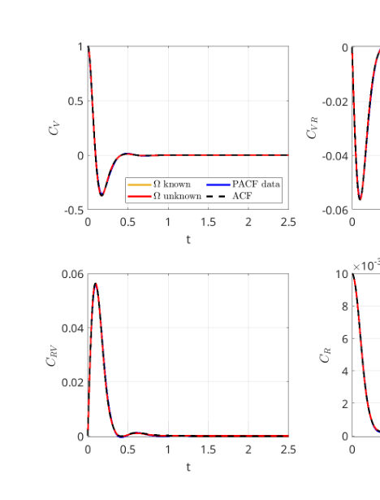
<figcaption class="paper-figure-caption"><b>Fig 1.</b> Fig. 5.1. Autocorrelation function of Example 5.1 versus time t and the three numerical approx- imations. Each panel shows the scalar graphs corresponding to the respective entry of the matrix- valued function.</figcaption>
</figure>
<figure class="paper-figure-card">

<figcaption class="paper-figure-caption"><b>Fig 2.</b> Fig. 5.2. Absolute error between the true autocorrelation function of Example 5.1 and the three approximations. Each panel contains the scalar graphs corresponding to the error of the respective entry of the matrix-valued approximation. The black dashed lines show the target functions for additional information.</figcaption>
</figure>
<figure class="paper-figure-card">

<figcaption class="paper-figure-caption"><b>Fig 3.</b> Fig. 5.3. Velocity autocorrelation function of Example 5.2 versus time and the two approxi- mations with and without the integral constraint (4.12d). Each panel shows the scalar graphs corre- sponding to the respective entry of the matrix-valued function.</figcaption>
</figure>
<figure class="paper-figure-card">
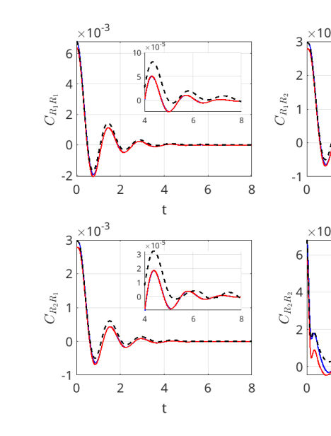
<figcaption class="paper-figure-caption"><b>Fig 4.</b> Fig. 5.4. Position autocorrelation function of Example 5.2 versus time and the two approxi- mations with and without the integral constraint (4.12d). Each panel shows the scalar graphs corre- sponding to the respective entries of the matrix-valued function.</figcaption>
</figure>
<figure class="paper-figure-card">
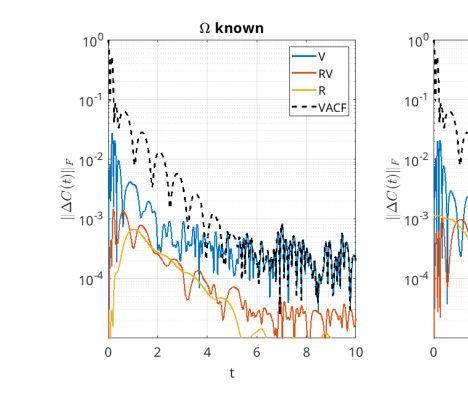
<figcaption class="paper-figure-caption"><b>Fig 5.</b> Fig. 5.5. Absolute error between the given velocity, position and cross correlation of Example 5.2 and the two approximations. The left panel shows the approximation error where Ωis known, the right panel where Ωis unknown, respectively.</figcaption>
</figure>
</div>

<p><strong>Summary.</strong> This paper presents a novel, data-driven method to convert the description of complex physical systems governed by Generalized Langevin Dynamics (GLEs) into an equivalent, solvable Markovian model. By utilizing autocorrelation functions and Prony series approximations, the authors bypass the difficult step of calculating the memory kernel directly from data. This technique is highly useful for simulating coarse-grained dynamics in condensed matter systems where non-Markovian effects are dominant.</p>
<p><strong>Why it may be interesting.</strong> This work provides a powerful computational tool for modeling complex non-Markovian dynamics common in condensed matter physics. The ability to extract effective Markov descriptions directly from measured correlations is highly valuable for simulating systems where memory effects are crucial but analytically intractable.</p>
<details>
<summary>Detailed structure</summary>
<p><strong>Main problem.</strong> The primary goal is developing a numerical algorithm to construct an effective Markov model that parameterizes the equation of motion for complex, multidimensional physical systems exhibiting memory effects.</p>
<p><strong>Main result.</strong> The authors successfully show how to bypass the difficult inverse problem by directly using autocorrelation data (via Prony series) to determine the parameters for the equivalent Ornstein-Uhlenbeck process.</p>
<p><strong>Method.</strong> The methodology involves approximating the system's dynamics, governed by a Generalized Langevin Equation (GLE), with an auxiliary variable Markovian model. This is achieved by fitting the velocity autocorrelation function using techniques like the AAA algorithm and Prony series expansion.</p>
<p><strong>Model / system.</strong> The study focuses on coarse-grained physical systems whose motion is described by GLEs in an external potential, often linearized to a quadratic form ($\Phi(x) = rac{1}{2} x^T \Omega x$). The system dynamics are modeled using auxiliary variables to transform the non-Markovian process into a solvable Ornstein-Uhlenbeck (OU) system.</p>
<p><strong>Key observables.</strong> Velocity autocorrelation function ($C_V(t)$), position autocorrelation function ($C_R(t)$), and cross-correlations ($C_{RV}$).</p>
<p><strong>Important parameters / regimes.</strong> The number of auxiliary variables required for the Markov model (e.g., five for 1D, twelve for 2D) and system parameters like mass ($m$) and potential stiffness ($\Omega$).</p>
<p><strong>Assumptions / limitations.</strong> Key assumptions include linearizing the external potential to a quadratic form, assuming the existence of a stationary Gaussian process solution, and approximating continuous autocorrelation data using finite equidistant samples (Markov approximation).</p>
<p><strong>Figures summary.</strong> Figures compare the reconstructed position autocorrelation function against known values, showing good agreement for velocity correlations. Error analysis quantifies the performance of the approximations in various correlation functions.</p>
<p><strong>Paper structure.</strong> The paper progresses from establishing the theoretical framework connecting GLEs to OU systems (using system theory concepts) to detailing the data-driven numerical procedure using Prony series and convex optimization solvers, culminating in validation against molecular dynamics simulations.</p>
</details>
<details>
<summary>Abstract</summary>
<p>We propose a numerical algorithm to construct a Markov model with an extended list of variables to parameterize the equation of motion of a multidimensional coarse-grained physical system in an external potential, when memory effects are relevant. Our method uses autocorrelation data of the stationary velocities, but it avoids the inverse problem of finding the corresponding memory kernel from these data in a first step. Rather, the data are used to construct a Prony series approximation of the autocorrelation function, and the parameters of this Prony series provide the corresponding Markov model. Numerical results for molecular dynamics data show a good match for parameterized models with five auxiliary variables for a one-dimensional, and twelve auxiliary variables for a two-dimensional system.</p>
</details>
<p><sub><a href="#top">↑ back to top</a></sub></p>

<p><a id="paper-2607.04161"></a></p>
<h3 id="emergent-fermi-polarons-in-dirac-materials"><a href="http://arxiv.org/abs/2607.04161v1">Emergent Fermi polarons in Dirac materials</a></h3>
<p><strong>Authors:</strong> Xin Chen, Eugen Dizer, Rafał Ołdziejewski, Kostya S. Novoselov, Marton Kanász-Nagy, Richard Schmidt<br>
<strong>Type:</strong> theory · <strong>Category:</strong> other · <strong>PDF:</strong> <a href="https://arxiv.org/pdf/2607.04161v1">https://arxiv.org/pdf/2607.04161v1</a><br>
<strong>Analysis basis:</strong> full PDF text, analyzed in chunks
<strong>Topic relevance:</strong> <code>Keldysh / 2PI / non-Gaussian methods</code> <strong>3/5</strong> · <code>Kondo &amp; dissipative impurity</code> <strong>3/5</strong> · <code>analog quantum simulation</code> <strong>2/5</strong> · <code>correlated / nonlocal dissipation</code> <strong>1/5</strong> · <code>driven-dissipative phase transition</code> <strong>1/5</strong> · <code>methods for driven-dissipative</code> <strong>1/5</strong> · <code>non-equilibrium dynamics</code> <strong>1/5</strong></p>
<div class="figure-strip-hint">↔ Scroll figures horizontally</div>
<div class="paper-figures-scroll">
<figure class="paper-figure-card">
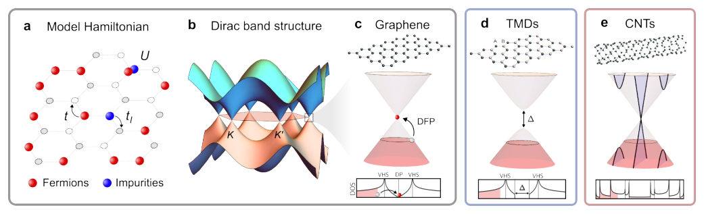
<figcaption class="paper-figure-caption"><b>Fig 1.</b> FIG. 1. Setup and physical regimes. Massless Dirac regime (gray box): a Schematic realization, where majority fermions (red) and impurities (blue) populate a honeycomb lattice with hopping amplitudes t and tI, respectively, and interact via an on-site potential U. b Three-dimensional honeycomb band structure featuring two inequivalent Dirac points K and K′ at the corners of the Brillouin zone. c Zoom into the linear Dirac cone with the corresponding gapless DOS (bottom), vanishing at the charge-neutrality point. The arrow illustrates the particle-hole excitation responsible for the emergence of the Dirac-Fermi polaron (DFP). Massive Dirac regime (blue box): d Massive Dirac cone with gap...</figcaption>
</figure>
<figure class="paper-figure-card">
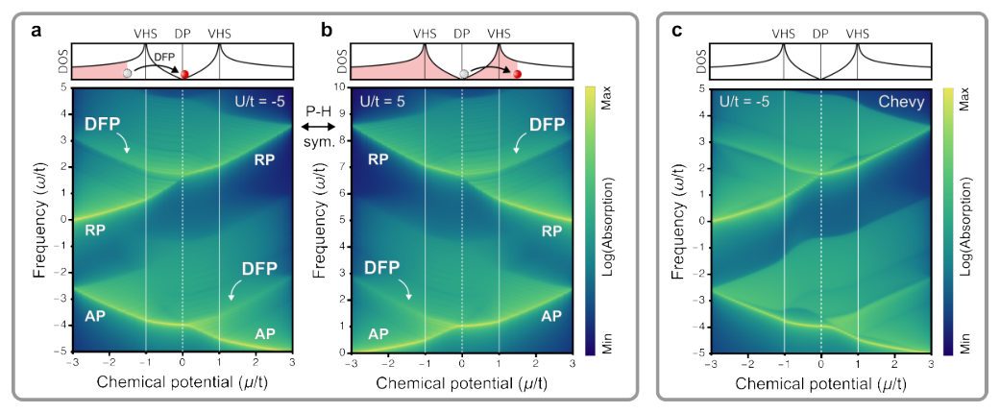
<figcaption class="paper-figure-caption"><b>Fig 2.</b> FIG. 2. a,b Absorption spectrum of a static impurity (tI = 0) in the massless Dirac regime for attractive (U/t = −5) and repulsive (U/t = 5) interactions, calculated via the functional determinant approach (FDA). In addition to the conventional attractive polaron (AP) and repulsive polaron (RP) branches, Dirac-Fermi polaron (DFP) resonances are visible. The symmetry between panels a and b reflects the particle-hole symmetry of the honeycomb band structure. c The corresponding spectrum of a static impurity for attractive interactions obtained from the variational Chevy ansatz, Eq. (4). Vertical dotted and solid lines mark the Dirac point (DP) and van Hove singularities (VHS), respectively,...</figcaption>
</figure>
<figure class="paper-figure-card">

<figcaption class="paper-figure-caption"><b>Fig 3.</b> FIG. 3. Absorption spectrum of a static impurity (tI = 0) for attractive interactions (U/t = −5). a,b Massive Dirac regime (blue box, ∆= t): FDA spectra for the impurity located at sublattice site A and B, with the schematic interacting DOS shown above each panel indicating bound state energies and band edges. The separation between the attractive and repulsive polaron branches is set by the bound state energy EB. The distances from the in-gap bound state to the lower and upper band edges are marked by 1 and 2, respectively. For site A, the in-gap state resides near the centre of the gap, giving rise to two distinct spectral gaps. In contrast, for an impurity at site B, no in-gap state is...</figcaption>
</figure>
<figure class="paper-figure-card">
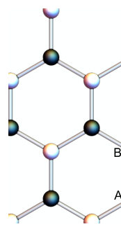
<figcaption class="paper-figure-caption"><b>Fig 4.</b> FIG. 1. The honeycomb lattice is constructed with lattice vectors a1 = √</figcaption>
</figure>
<figure class="paper-figure-card">
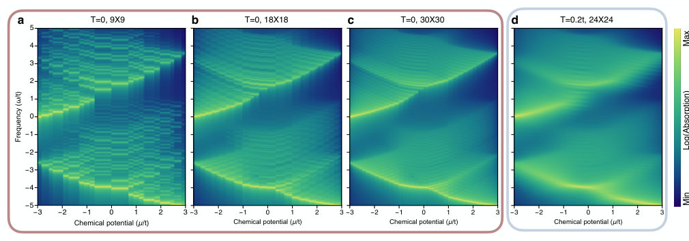
<figcaption class="paper-figure-caption"><b>Fig 5.</b> FIG. 2. FDA absorption spectra for an interaction strength of U = −5 t with periodic boundary conditions. a–c Spectra at zero temperature (T = 0) for progressively larger lattice sizes: a 9 × 9, b 18 × 18, and c 30 × 30. d The corresponding finite-temperature absorption spectrum evaluated at T = 0.2 t on a 24 × 24 lattice.</figcaption>
</figure>
</div>

<p><strong>Summary.</strong> This work theoretically investigates how impurities interact with fermions in Dirac materials, predicting the formation of robust quasiparticles called Dirac-Fermi polarons (DFP). By analyzing absorption spectra and self-energies, the authors show that polaron spectroscopy provides a unique tool to probe band structure effects beyond simple continuum models. The findings confirm the DFP's stability across various doping levels in these exotic quantum systems.</p>
<p><strong>Why it may be interesting.</strong> The focus on polaron spectroscopy as a probe of band structure effects at energies far from the Fermi surface is highly relevant to understanding correlated excitations in low-dimensional quantum materials, bridging concepts from condensed matter theory with spectroscopic measurements applicable to cold atoms.</p>
<details>
<summary>Detailed structure</summary>
<p><strong>Main problem.</strong> The study investigates band-structure effects on the absorption spectra of quantum impurities in Dirac materials to establish polaron spectroscopy as a powerful probe for these effects.</p>
<p><strong>Main result.</strong> The authors predict the robust emergence of a novel quasiparticle resonance, the Dirac–Fermi polaron (DFP), which persists across doping levels and interaction strengths.</p>
<p><strong>Method.</strong> Theoretical calculations utilize the Loschmidt echo formalism and functional determinant approaches to analyze spectral functions and self-energies for both static and mobile impurities.</p>
<p><strong>Model / system.</strong> The system models fermionic impurities interacting with bath fermions in Dirac materials, such as those on honeycomb lattices (graphene). The Hamiltonian includes impurity interaction terms, allowing investigation across massless, massive, and metallic regimes.</p>
<p><strong>Key observables.</strong> Absorption spectrum ($A(\omega)$), polaron branches (Attractive Polaron (AP), Repulsive Polaron (RP), Dirac-Fermi Polaron (DFP)), quasiparticle residue ($Z$), and lifetime ($ au$).</p>
<p><strong>Important parameters / regimes.</strong> Interaction strength ($U/t$), chemical potential ($\mu$) relative to the Fermi level, and lattice structure details (massless vs. massive Dirac regime).</p>
<p><strong>Assumptions / limitations.</strong> The analysis relies on variational ansatz approaches for self-energy calculations; it notes that standard effective field theories are insufficient for these systems.</p>
<p><strong>Figures summary.</strong> Figures illustrate absorption spectra across different regimes (Massless, Massive, Metallic) and compare static vs. mobile impurity self-energies, showing the survival of quasiparticle peaks despite theoretical expectations otherwise.</p>
<p><strong>Paper structure.</strong> The paper progresses by first establishing the spectral signature using the Loschmidt echo in various Dirac regimes; it then develops the theory for both static and mobile impurities, confirming the DFP's robustness via self-energy analysis and T-matrix calculations.</p>
</details>
<details>
<summary>Abstract</summary>
<p>We investigate band-structure effects on the absorption spectra of quantum impurities in Dirac materials. We uncover the formation of novel quasiparticles -- Dirac-Fermi polarons -- emerging from the dressing of impurities by excitations near the Dirac point. These quasiparticles are remarkably robust, persisting for both attractive and repulsive interactions, and across the full range of electron and hole doping. We show that their spectroscopic signature is a generic feature of Dirac materials, accessible with established techniques in both solid-state and ultracold atomic platforms. Our results establish polaron spectroscopy as a powerful probe of Dirac points at energies far from the Fermi surface, providing direct access to band-structure effects beyond conventional approaches.</p>
</details>
<p><sub><a href="#top">↑ back to top</a></sub></p>

<p><a id="paper-2607.04721"></a></p>
<h3 id="mapping-open-quantum-dynamics-onto-graphs"><a href="http://arxiv.org/abs/2607.04721v1">Mapping open quantum dynamics onto graphs</a></h3>
<p><strong>Authors:</strong> Kyuho Kim, Dayeong Lee, Seungkyun Park, Xianji Piao, Namkyoo Park, Sunkyu Yu<br>
<strong>Type:</strong> theory · <strong>Category:</strong> other · <strong>PDF:</strong> <a href="https://arxiv.org/pdf/2607.04721v1">https://arxiv.org/pdf/2607.04721v1</a><br>
<strong>Analysis basis:</strong> full PDF text, analyzed in chunks
<strong>Topic relevance:</strong> <code>methods for driven-dissipative</code> <strong>3/5</strong> · <code>correlated / nonlocal dissipation</code> <strong>2/5</strong> · <code>driven-dissipative phase transition</code> <strong>2/5</strong> · <code>Keldysh / 2PI / non-Gaussian methods</code> <strong>1/5</strong> · <code>analog quantum simulation</code> <strong>1/5</strong> · <code>entanglement &amp; information structure</code> <strong>1/5</strong> · <code>non-equilibrium dynamics</code> <strong>1/5</strong> · <code>non-equilibrium universality</code> <strong>1/5</strong></p>
<div class="figure-strip-hint">↔ Scroll figures horizontally</div>
<div class="paper-figures-scroll">
<figure class="paper-figure-card">

<figcaption class="paper-figure-caption"><b>Fig 1.</b> Fig. 1. Schrödinger operator graphs. a, Magnetic graph G = (V, E) with NG vertices, where</figcaption>
</figure>
<figure class="paper-figure-card">

<figcaption class="paper-figure-caption"><b>Fig 2.</b> Fig. 2. Open quantum Rabi graphs. a, Schematic of the open QRM. b,c, GH (b) and GL (c) for</figcaption>
</figure>
<figure class="paper-figure-card">

<figcaption class="paper-figure-caption"><b>Fig 3.</b> Fig. 3. USC open quantum Rabi graphs. a-c, GL for (κ, γ, γφ) = (10–5, 10–5, 10–5) (a), (10–5, 0, 0)</figcaption>
</figure>
<figure class="paper-figure-card">

<figcaption class="paper-figure-caption"><b>Fig 4.</b> Fig. 4. Graph pruning. a, Schematic of graph pruning. b-d, Liouville spectra and the</figcaption>
</figure>
<figure class="paper-figure-card">
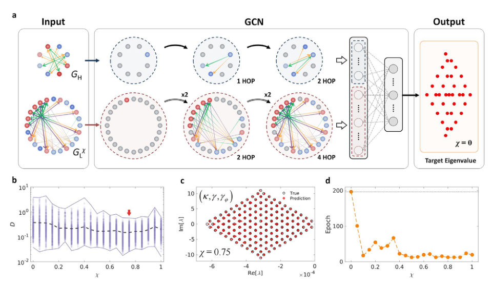
<figcaption class="paper-figure-caption"><b>Fig 5.</b> Fig. 5. Schrödinger-operator graph neural networks. a, Schematic of the GCN, where ‘HOP’</figcaption>
</figure>
</div>

<p><strong>Summary.</strong> The paper introduces a universal graph-theoretic framework to analyze open quantum dynamics by mapping the system's evolution onto two distinct graphs. By applying this to the Open Quantum Rabi Model, the authors demonstrate that graph structures can characterize dissipation and coupling regimes. They further show that Graph Neural Networks trained on these pruned graphs can accurately predict the complex Liouville spectrum.</p>
<p><strong>Why it may be interesting.</strong> This work provides a powerful mathematical bridge between advanced concepts in quantum optics (open systems) and modern machine learning tools (GNNs), offering new diagnostic tools for understanding dissipation mechanisms in complex quantum devices.</p>
<details>
<summary>Detailed structure</summary>
<p><strong>Main problem.</strong> To develop a universal graph-theoretic framework for mapping and analyzing open quantum dynamics, addressing the unexplored connectivity structure of system-bath coupling.</p>
<p><strong>Main result.</strong> The authors propose a framework that maps Markovian open quantum dynamics onto two uniquely defined graphs ($G_H$ and $G_L$), allowing for efficient data-driven analysis using graph neural networks (GNNs). Graph pruning was shown to preserve spectral features significantly better than direct matrix sparsification.</p>
<p><strong>Method.</strong> The method involves representing the Lindblad master equation evolution via operator-valued signals on magnetic graphs, followed by applying graph pruning and training a Graph Convolutional Network (GCN) to predict the Liouville spectrum.</p>
<p><strong>Model / system.</strong> The study focuses on open quantum systems undergoing Markovian dynamics, exemplified by the Open Quantum Rabi Model (QRM). The evolution is governed by the Lindblad Master Equation involving system-bath coupling terms ($\kappa, \gamma, \gamma_\phi$).</p>
<p><strong>Key observables.</strong> Liouville spectrum (eigenvalues $\lambda$), graph topologies ($G_H, G_L$), and spectral diagnostics like the Chamfer distance $D$ used to quantify approximation accuracy.</p>
<p><strong>Important parameters / regimes.</strong> Coupling strengths ($\kappa, \gamma, \gamma_\phi$), pruning threshold ($\chi$), and coupling regimes such as weak-to-ultrastrong coupling (USC).</p>
<p><strong>Assumptions / limitations.</strong> The framework assumes the dynamics can be accurately characterized by two graph structures ($G_H$ and $G_L$) derived from the Lindblad form, and that a GCN trained on these graphs can predict the spectrum.</p>
<p><strong>Figures summary.</strong> Figures illustrate the QRM graphs ($G_H, G_L$), show spectral differences across dissipation regimes, compare graph pruning vs. matrix sparsification using Chamfer distance, and demonstrate optimal GCN performance at specific pruning thresholds ($\chi$).</p>
<p><strong>Paper structure.</strong> The paper introduces the universal graph framework for open dynamics, applies it to the QRM model, details the use of graph measures and spectral analysis, compares graph pruning against standard matrix methods, and finally demonstrates predictive power using a trained Graph Convolutional Network.</p>
</details>
<details>
<summary>Abstract</summary>
<p>Graph-theoretic frameworks have been widely employed in quantum physics to address the high-dimensional complexity of quantum systems. Although open quantum dynamics incorporates system-bath coupling via numerous interacting operators, it has been formulated algebraically with a partial set of jump operators or statistically universal reservoirs, leaving the underlying connectivity structure largely unexplored. Here, we propose a universal graph-theoretic framework for Markovian quantum dynamics. The framework maps open quantum dynamics onto two uniquely defined graphs, where the quantum master equation is rigorously interpreted as the average wave characteristic of operator-valued signals across the graphs. Applying this framework to the open quantum Rabi model, we demonstrate an open-system generalization of Fock-state lattices, characterize graph-topological signatures of dissipation, and classify the weak-to-ultrastrong coupling transition. Building on these representations, graph pruning reveals the backbone of open quantum dynamics, which enables superior graph neural-network learning. Our results bridge graph theory and open quantum dynamics, achieving efficient data-driven analysis of high-dimensional complexity.</p>
</details>
<p><sub><a href="#top">↑ back to top</a></sub></p>

<p><a id="paper-2607.04295"></a></p>
<h3 id="optimal-estimation-of-quantum-boundary-effect-in-cosmic-string-space-time"><a href="http://arxiv.org/abs/2607.04295v1">Optimal estimation of quantum boundary effect in cosmic string space-time</a></h3>
<p><strong>Authors:</strong> Yao Jin<br>
<strong>Type:</strong> theory · <strong>Category:</strong> other · <strong>PDF:</strong> <a href="https://arxiv.org/pdf/2607.04295v1">https://arxiv.org/pdf/2607.04295v1</a><br>
<strong>Analysis basis:</strong> full PDF text, analyzed in chunks
<strong>Topic relevance:</strong> <code>quantum measurements</code> <strong>3/5</strong> · <code>measurement-induced transitions</code> <strong>2/5</strong> · <code>Keldysh / 2PI / non-Gaussian methods</code> <strong>1/5</strong> · <code>analog quantum simulation</code> <strong>1/5</strong> · <code>correlated / nonlocal dissipation</code> <strong>1/5</strong> · <code>driven-dissipative phase transition</code> <strong>1/5</strong> · <code>entanglement &amp; information structure</code> <strong>1/5</strong> · <code>methods for driven-dissipative</code> <strong>1/5</strong> · <code>non-equilibrium dynamics</code> <strong>1/5</strong></p>
<div class="figure-strip-hint">↔ Scroll figures horizontally</div>
<div class="paper-figures-scroll">
<figure class="paper-figure-card">
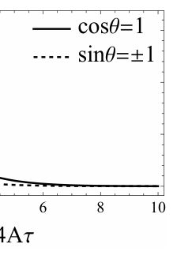
<figcaption class="paper-figure-caption"><b>Fig 1.</b> FIG. 1: f as a function of 4Aτ with cos θ = 1 and sin θ = ±1.</figcaption>
</figure>
<figure class="paper-figure-card">
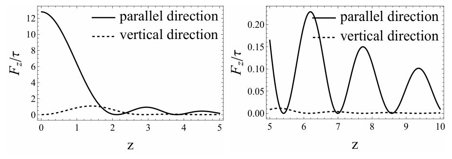
<figcaption class="paper-figure-caption"><b>Fig 2.</b> FIG. 2: Fz/τ as a function of z for in cases of parallel and vertical polarization respectively.</figcaption>
</figure>
<figure class="paper-figure-card">

<figcaption class="paper-figure-caption"><b>Fig 3.</b> FIG. 3: Fρ/τ as a function of ρ in cases with ρ, θ and z polarization direction when ν = 2.</figcaption>
</figure>
<figure class="paper-figure-card">
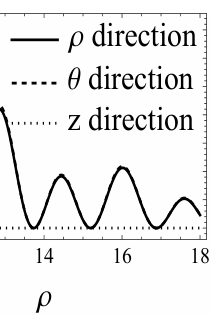
<figcaption class="paper-figure-caption"><b>Fig 4.</b> FIG. 4: Fρ/τ as a function of ρ in cases with ρ, θ and z polarization direction when</figcaption>
</figure>
</div>

<p><strong>Summary.</strong> This theoretical paper develops a method to optimally estimate quantum boundary effects caused by cosmic strings on an atom's dynamics. By analyzing the precision limit derived from sequential measurements, the authors show that the optimal measurement polarization depends sensitively on the geometry (separation and deficit angle). The findings provide detailed guidelines for experimental detection of such exotic spacetime features using atomic probes.</p>
<p><strong>Why it may be interesting.</strong> This work directly applies quantum estimation theory to exotic environments (cosmic strings), providing concrete predictions about how fundamental constants or geometric parameters can be measured using atomic probes in open quantum systems settings.</p>
<details>
<summary>Detailed structure</summary>
<p><strong>Main problem.</strong> The paper addresses the optimal estimation of quantum boundary effects induced by cosmic strings on the dynamics of a two-level polarizable atom.</p>
<p><strong>Main result.</strong> The optimal measurement basis and initial state depend critically on whether the environment is a simple reflecting boundary or a cosmic string, with polarization choices varying based on separation and deficit angle.</p>
<p><strong>Method.</strong> The estimation precision limit is determined using the Cramér-Rao bound by performing sequential measurements on a single probe atom, optimizing preparation, measurement basis, and interaction time.</p>
<p><strong>Model / system.</strong> The system involves a two-level polarizable atom whose vacuum fluctuations are modified by either an infinite conducting reflecting boundary or a static cosmic string. The dynamics are governed by the reduced density matrix evolution following the Kossakowski-Lindblad form.</p>
<p><strong>Key observables.</strong> Estimation precision, quantified by $F_{direction}/	au$, which measures how well a position factor (related to vacuum fluctuation modification) can be estimated.</p>
<p><strong>Important parameters / regimes.</strong> Atom-string separation ($
ho$ or $z$), deficit angle, and the total probe time ($T$).</p>
<p><strong>Assumptions / limitations.</strong> The analysis assumes weak coupling and that the initial field state is vacuum in the atom's frame.</p>
<p><strong>Figures summary.</strong> Figure 2 compares precision for parallel vs. vertical polarization in a reflecting boundary; Figure 3 and 4 show how $
ho$, $  heta$, and $z$ polarizations compare as functions of separation ($
ho$) in cosmic string backgrounds under different deficit angle regimes.</p>
<p><strong>Paper structure.</strong> The paper first establishes the general framework using sequential measurements to estimate position factors. It then analyzes two distinct physical scenarios: the bounded flat space-time (reflecting boundary) and the cosmic string space-time, deriving optimal strategies for each case.</p>
</details>
<details>
<summary>Abstract</summary>
<p>The presence of a cosmic string modifies vacuum fluctuations, making the evolution of a two-level polarizable atom position dependent. Such modifications produce effects on the atomic dynamics analogous to those induced by a reflecting boundary. We show that these quantum boundary effects can be estimated by performing a sequence of $N$ measurements on a single probe atom. For a fixed total probe time, the precision limit is attained by preparing each probe in its optimal initial state, performing the corresponding optimal measurement, and shortening the probe time of each probe. The optimal measurement is uniquely determined by the probe's initial state, and the precision limit obtained with the atom initially in the excited state is four times higher than that for an equal-weight superposition state. The estimation precision displays damped oscillatory behavior as the atom-boundary or atom-string separation increases. While polarization parallel to the reflecting boundary is always optimal in the boundary case, the optimal polarization in cosmic-string space-time depends on both the atom-string separation and the deficit angle. For small deficit angles and sufficiently large separations, polarization along the cosmic-string direction becomes inferior to the other polarization directions.</p>
</details>
<p><sub><a href="#top">↑ back to top</a></sub></p>

<p><a id="paper-2607.04021"></a></p>
<h3 id="detection-methods-for-optimal-target-reflectivity-estimation-with-two-mode-squeezed-vacuum-probes"><a href="http://arxiv.org/abs/2607.04021v1">Detection methods for optimal target reflectivity estimation with two-mode squeezed vacuum probes</a></h3>
<p><strong>Authors:</strong> Harel Radia, Tuvia Gefen, Nadav Katz<br>
<strong>Type:</strong> theory · <strong>Category:</strong> other · <strong>PDF:</strong> <a href="https://arxiv.org/pdf/2607.04021v1">https://arxiv.org/pdf/2607.04021v1</a><br>
<strong>Analysis basis:</strong> full PDF text, analyzed in chunks
<strong>Topic relevance:</strong> <code>quantum measurements</code> <strong>3/5</strong> · <code>entanglement &amp; information structure</code> <strong>2/5</strong> · <code>measurement-induced transitions</code> <strong>2/5</strong> · <code>Keldysh / 2PI / non-Gaussian methods</code> <strong>1/5</strong> · <code>correlated / nonlocal dissipation</code> <strong>1/5</strong> · <code>driven-dissipative phase transition</code> <strong>1/5</strong> · <code>methods for driven-dissipative</code> <strong>1/5</strong></p>
<div class="figure-strip-hint">↔ Scroll figures horizontally</div>
<div class="paper-figures-scroll">
<figure class="paper-figure-card">

<figcaption class="paper-figure-caption"><b>Fig 1.</b> FIG. 1: Phase-space projections of the output state for nβ ≈2.32 (T ≈0.667 K at 5 GHz) and nr = 1, across various target reflectivities η. The green line indicates the vacuum state for reference. The black, blue and red lines correspond to η = 0, 0.5 and 1 respectively.</figcaption>
</figure>
<figure class="paper-figure-card">
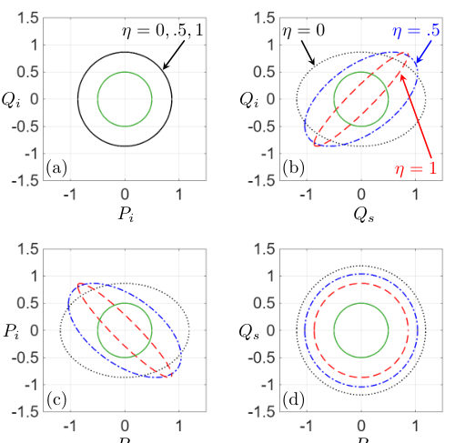
<figcaption class="paper-figure-caption"><b>Fig 2.</b> Fig. 1 shows phase-space projections of the output state onto various subspaces for different values of η, and</figcaption>
</figure>
<figure class="paper-figure-card">
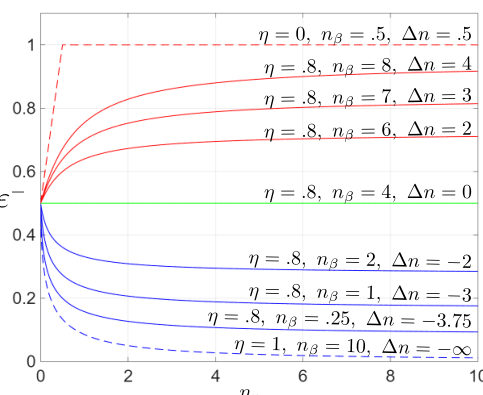
<figcaption class="paper-figure-caption"><b>Fig 3.</b> FIG. 2: Dependence of the smallest symplectic eigen- value ε−on the squeezing parameter nr, plotted for var- ious values of the photon number difference ∆n. Solid blue curves indicate the entangled regime (∆n &lt; 0). Solid red curves correspond to the separable regime (∆n &gt; 0). For reference, the dashed curves depict the limiting cases of perfect reflection (η →1, blue) and total loss (η →0, red).</figcaption>
</figure>
<figure class="paper-figure-card">
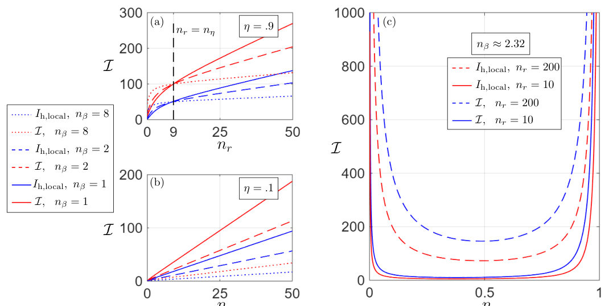
<figcaption class="paper-figure-caption"><b>Fig 4.</b> FIG. 3: (a),(b) QFI and local homodyne FI as a function of nr, for different values of nβ, with (a) η = 0.9 and (b) η = 0.1. The dashed, black vertical line represents the crossover point of nr = nη, in which the dependence on nβ changes. (c) QFI and local homodyne FI as a function of η, for nβ ≈2.32, and different values of nr.</figcaption>
</figure>
<figure class="paper-figure-card">

<figcaption class="paper-figure-caption"><b>Fig 5.</b> FIG. 4: (a) The ratio R = Icoh/I as a function of reflectivity η, (b) R as a function of nr. The TMSV QFI is always larger, and thus R ≤1, where the maximal gap is at larger η. (c) R = Icoh/Ih,local as a function of reflectivity η (d) and mean photon number nr. The gray line corresponds to R = 1.</figcaption>
</figure>
</div>

<p><strong>Summary.</strong> This paper investigates how accurately one can estimate a target's reflectivity using squeezed vacuum light probes. It rigorously compares the ultimate theoretical precision limit (QFI) against what is achievable with practical local measurements. The key finding is that while perfect measurement requires non-local techniques, suitable Gaussian measurements can still achieve near-optimal estimation in many relevant noisy physical scenarios.</p>
<p><strong>Why it may be interesting.</strong> This work is highly relevant for quantum optics and open quantum systems as it provides concrete, quantifiable benchmarks for sensing parameters in realistic noisy environments using continuous variable entanglement.</p>
<details>
<summary>Detailed structure</summary>
<p><strong>Main problem.</strong> The paper addresses the fundamental limit of precision for estimating a target's reflectivity ($\eta$) using quantum probes, specifically two-mode squeezed vacuum (TMSV) states.</p>
<p><strong>Main result.</strong> Near-optimal quantum estimation is achievable even when restricted to Gaussian measurements, demonstrating that suitable non-local Gaussian measurements can approach the ultimate quantum Cramér-Rao bound in various noisy regimes.</p>
<p><strong>Method.</strong> The analysis employs quantum estimation theory, calculating the Quantum Fisher Information (QFI) and comparing it against local measurement limits using tools from symplectic geometry and Gaussian state formalism.</p>
<p><strong>Model / system.</strong> The system involves a signal mode interacting with an unknown reflectivity ($\eta$) via a thermal-loss channel, probed by a TMSV state. The output state remains Gaussian throughout the analysis.</p>
<p><strong>Key observables.</strong> Target reflectivity ($\eta$), Quantum Fisher Information ($I$), local homodyne Fisher Information ($  ext{Ih,local}$), and entanglement measures like the smallest symplectic eigenvalue ($\epsilon^-$).</p>
<p><strong>Important parameters / regimes.</strong> Squeezing parameter ($r$), mean photon number ($n_r$), thermal environment parameters ($n_eta$), and reflectivity ($\eta$). Key regimes include high/low reflectivity thresholds.</p>
<p><strong>Assumptions / limitations.</strong> The analysis assumes that the probe state parameters ($n_r, n_eta$) are known while $\eta$ is unknown. It also analyzes performance under Gaussian measurement restrictions.</p>
<p><strong>Figures summary.</strong> Figures illustrate phase-space projections showing how $\eta$ modifies the output state and depict the dependence of entanglement ($\epsilon^-$) on system parameters, defining boundaries between entangled and separable regimes.</p>
<p><strong>Paper structure.</strong> The paper progresses by establishing the theoretical framework using SLD operators to find optimal measurements. It then analyzes specific measurement protocols (local vs. non-local Gaussian) to compare achievable precision limits against the QFI bound, detailing transitions based on $\eta$.</p>
</details>
<details>
<summary>Abstract</summary>
<p>Target reflectivity estimation using a two-mode squeezed vacuum (TMSV) probe offers a theoretical advantage over classical schemes, but realizing this potential under the measurement constraints of microwave platforms remains a central challenge. In this work, we study the precision limits for target reflectivity estimation across different energy and loss regimes, while accounting for realistic measurement restrictions. We characterize the optimal measurements and identify a transition in their structure: above a specific reflectivity threshold, a parametric amplifier receiver is optimal, whereas below it, the optimal observables are two-mode squeezing generators. We then study the performance of Gaussian measurements. When restricted to standard local homodyne detection, the TMSV probe is highly non-optimal. However, we show that suitable non-local Gaussian measurements can closely approach the quantum Cramér-Rao bound at the large noise limit. These results demonstrate that near-optimal quantum target reflectivity estimation is achievable in various relevant noisy regimes, even under the restriction of Gaussian measurements.</p>
</details>
<p><sub><a href="#top">↑ back to top</a></sub></p>

<p><a id="paper-2607.03605"></a></p>
<h3 id="minimal-proper-time-and-deterministic-microstates-emergent-quantum-fields-and-relativistic-spacetime"><a href="http://arxiv.org/abs/2607.03605v1">Minimal Proper Time and Deterministic Microstates: Emergent Quantum Fields and Relativistic Spacetime</a></h3>
<p><strong>Authors:</strong> Alessio Maiezza<br>
<strong>Type:</strong> theory · <strong>Category:</strong> other · <strong>PDF:</strong> <a href="https://arxiv.org/pdf/2607.03605v1">https://arxiv.org/pdf/2607.03605v1</a><br>
<strong>Analysis basis:</strong> full PDF text, analyzed in chunks
<strong>Topic relevance:</strong> <code>Keldysh / 2PI / non-Gaussian methods</code> <strong>3/5</strong> · <code>non-equilibrium dynamics</code> <strong>2/5</strong> · <code>correlated / nonlocal dissipation</code> <strong>1/5</strong> · <code>correlated cavity matter</code> <strong>1/5</strong> · <code>driven-dissipative phase transition</code> <strong>1/5</strong> · <code>entanglement &amp; information structure</code> <strong>1/5</strong> · <code>methods for driven-dissipative</code> <strong>1/5</strong> · <code>non-equilibrium universality</code> <strong>1/5</strong></p>
<div class="figure-strip-hint">↔ Scroll figures horizontally</div>
<div class="paper-figures-scroll">
<figure class="paper-figure-card">
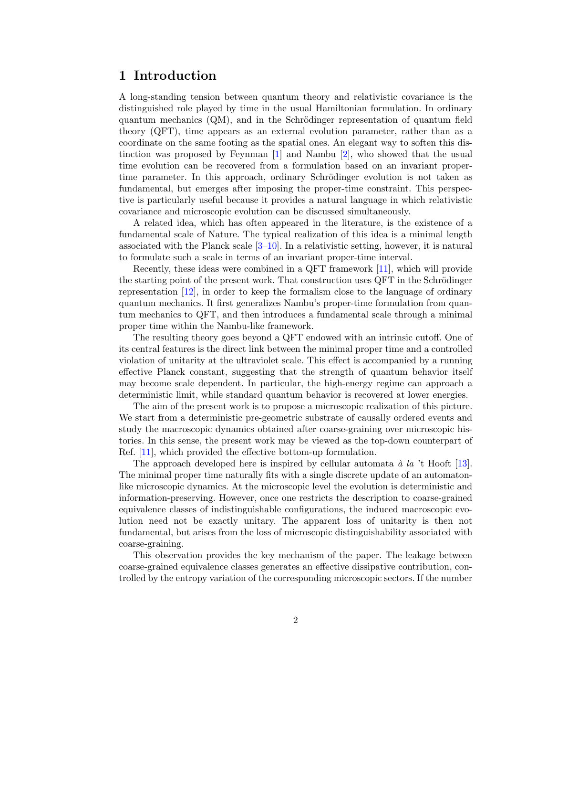
<figcaption class="paper-figure-caption"><b>Fig 1.</b> Low-resolution page preview, page 2</figcaption>
</figure>
<figure class="paper-figure-card">
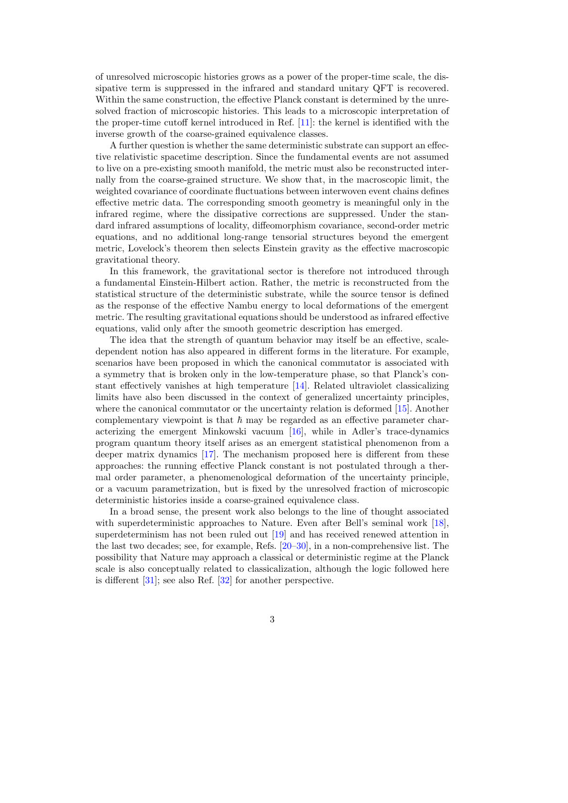
<figcaption class="paper-figure-caption"><b>Fig 2.</b> Low-resolution page preview, page 3</figcaption>
</figure>
<figure class="paper-figure-card">
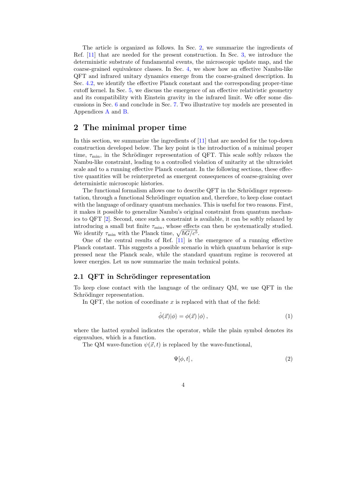
<figcaption class="paper-figure-caption"><b>Fig 3.</b> Low-resolution page preview, page 4</figcaption>
</figure>
<figure class="paper-figure-card">

<figcaption class="paper-figure-caption"><b>Fig 4.</b> Low-resolution page preview, page 5</figcaption>
</figure>
<figure class="paper-figure-card">

<figcaption class="paper-figure-caption"><b>Fig 5.</b> Low-resolution page preview, page 6</figcaption>
</figure>
</div>

<p><strong>Summary.</strong> This work proposes that both quantum field theory and relativistic spacetime emerge from a deeper, underlying deterministic structure composed of causally ordered events. By performing a coarse-graining procedure over these microscopic histories, the authors derive an effective Nambu dynamics whose low-energy limit recovers standard QFT and generates Einstein's gravity equations as its macroscopic description.</p>
<p><strong>Why it may be interesting.</strong> While highly theoretical, the concept of deriving fundamental physics (QFT/GR) from a discrete, deterministic substrate is relevant to foundational questions addressed by quantum information theory regarding emergence and effective descriptions.</p>
<details>
<summary>Detailed structure</summary>
<p><strong>Main problem.</strong> The paper aims to develop a top-down framework showing how quantum field theory (QFT) and relativistic spacetime emerge from a fundamentally deterministic, pre-geometric substrate of causally ordered events.</p>
<p><strong>Main result.</strong> Coarse-graining over microscopic histories naturally yields an effective Nambu-like quantum dynamics at low energies, which in turn generates an emergent metric compatible with Einstein gravity in the macroscopic limit.</p>
<p><strong>Method.</strong> The authors employ a coarse-graining procedure on a deterministic substrate, comparing it to established bottom-up proper-time formulations and deriving effective field equations via linear response theory.</p>
<p><strong>Model / system.</strong> The model starts with a deterministic pre-geometric substrate of causally ordered events. Dynamics are analyzed by treating the evolution as a coarse-graining process over microscopic histories, leading to an effective Hamiltonian structure.</p>
<p><strong>Key observables.</strong> Effective Planck constant ($\hbar_{eff}$), emergent metric components ($g_{\mu
u}(x)$), and the stress-energy tensor ($T_{\mu
u}$).</p>
<p><strong>Important parameters / regimes.</strong> Minimal proper time step ($ au_{\min} \sim \sqrt{\hbar G}/c^5$), scale parameter ($\eta = 1/n$), and the running effective Planck constant.</p>
<p><strong>Assumptions / limitations.</strong> The reconstruction of spacetime relies on standard infrared assumptions (locality, diffeomorphism covariance), and the source for curvature is defined internally by the response of the Nambu energy to metric deformations.</p>
<p><strong>Figures summary.</strong> Not specified in notes; however, the structure suggests calculations involving matrix forms ($K = I - \eta M$) and tensor components derived from local cardinalities ($q(x)$).</p>
<p><strong>Paper structure.</strong> The paper progresses by first establishing the top-down connection to QFT using minimal proper time ($ au_{\min}$), then developing toy models showing how coarse-graining yields effective dynamics, and finally applying this structure to derive emergent Einstein field equations from local variations in microscopic cardinalities.</p>
</details>
<details>
<summary>Abstract</summary>
<p>We develop a top-down counterpart of the minimal proper-time formulation of quantum field theory previously introduced as an effective bottom-up framework. Starting from a deterministic pre-geometric substrate of causally ordered events, we show how coarse-graining over microscopic histories leads, at low energies, to an effective Nambu-like quantum dynamics. The elementary deterministic update is identified with the minimal proper-time step, while the growth of coarse-grained equivalence classes controls both the ultraviolet dissipative correction and the scale dependence of the effective quantization strength, encoded in a running Planck constant. In this way, the proper-time cutoff kernel of the bottom-up formulation acquires a microscopic interpretation as the inverse growth of unresolved deterministic histories. In the infrared limit, the dissipative term vanishes and standard unitary quantum field theory is recovered. The same coarse-grained structure also provides a natural setting for an emergent relativistic spacetime geometry, compatible in the macroscopic limit with Einstein gravity. The resulting picture suggests a common deterministic origin for minimal-scale structure, quantum behavior, and relativistic spacetime.</p>
</details>
<p><sub><a href="#top">↑ back to top</a></sub></p>

<p><a id="paper-2607.04950"></a></p>
<h3 id="contraction-and-expansion-values-of-quantum-channels"><a href="http://arxiv.org/abs/2607.04950v1">Contraction and Expansion Values of Quantum Channels</a></h3>
<p><strong>Authors:</strong> Ruben Ibarrondo, Mikel Sanz<br>
<strong>Type:</strong> theory · <strong>Category:</strong> quantum information and computing · <strong>PDF:</strong> <a href="https://arxiv.org/pdf/2607.04950v1">https://arxiv.org/pdf/2607.04950v1</a><br>
<strong>Analysis basis:</strong> full PDF text, analyzed in chunks
<strong>Topic relevance:</strong> <code>entanglement &amp; information structure</code> <strong>3/5</strong> · <code>non-equilibrium dynamics</code> <strong>2/5</strong> · <code>Keldysh / 2PI / non-Gaussian methods</code> <strong>1/5</strong> · <code>correlated / nonlocal dissipation</code> <strong>1/5</strong> · <code>driven-dissipative phase transition</code> <strong>1/5</strong> · <code>methods for driven-dissipative</code> <strong>1/5</strong> · <code>non-equilibrium universality</code> <strong>1/5</strong></p>
<div class="figure-strip-hint">↔ Scroll figures horizontally</div>
<div class="paper-figures-scroll">
<figure class="paper-figure-card">

<figcaption class="paper-figure-caption"><b>Fig 1.</b> Figure 1: Given a channel T and an index 1 ≤n ≤d2 −1, Alice and Bob agree on two states ρ and σ to play with. The game consists of Alice randomly choosing one of the states to send through the channel T, and Bob performing arbitrary one-shot measurements to guess which state was sent. The diagrams describe two ways to agree on the states, Bob’s success probability if both choose the optimal strategy is given by (a) the contraction coefficients, or (b) the expansion coefficients.</figcaption>
</figure>
<figure class="paper-figure-card">

<figcaption class="paper-figure-caption"><b>Fig 2.</b> Figure 2: Under the action of a quantum channel T, the Bloch sphere B is mapped into an ellipsoid T(B), see Eq. (74), contained inside the original sphere. The principal axes of the ellipsoid correspond to the contraction and expansion values of the channel.</figcaption>
</figure>
<figure class="paper-figure-card">
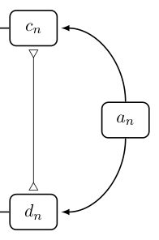
<figcaption class="paper-figure-caption"><b>Fig 3.</b> Figure 3: Relations between s-numbers. The filled arrows point from larger to smaller s-scales and the empty reversed arrows connect dual s-scales, in the sense of Proposition 30.</figcaption>
</figure>
<figure class="paper-figure-card">
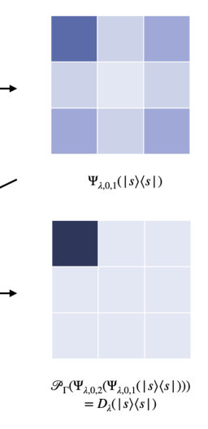
<figcaption class="paper-figure-caption"><b>Fig 4.</b> Figure 4: Depicts the decomposition presented in Lemma 32, which expresses the depolarizing channel as a chain of amplitude damping channels and a Hadamard channel. This example takes d = 3 and λ = 0.7 and the initial state |s⟩= 1 √</figcaption>
</figure>
</div>

<p><strong>Summary.</strong> This paper introduces contraction and expansion values ($\hat{\kappa}_n$ and $\check{\kappa}_n$) to provide a richer characterization of quantum channels than the standard contraction coefficient. By defining these as monotone sequences derived from variational principles, the authors establish bounds that correctly describe how information loss accumulates when multiple noisy processes are composed. This advances the mathematical tools available for analyzing open quantum systems.</p>
<p><strong>Why it may be interesting.</strong> This work provides a powerful mathematical framework for characterizing quantum noise beyond simple measures, offering spectral information crucial for understanding the fidelity of multi-step quantum processes relevant in quantum computation and communication.</p>
<details>
<summary>Detailed structure</summary>
<p><strong>Main problem.</strong> The standard contraction coefficient of a quantum channel is insufficient because it only captures the most optimistic behavior and fails to describe how information loss accumulates under channel composition.</p>
<p><strong>Main result.</strong> The authors introduce 'contraction' ($\hat{\kappa}_n(T)$) and 'expansion' ($\check{\kappa}_n(T)$) values as monotone sequences that refine the single scalar coefficients, providing dimension-dependent bounds for channel compositions.</p>
<p><strong>Method.</strong> The new values are derived using a min--max variational principle over subspaces of traceless Hermitian operators, linking them to Pietsch's theory of s-numbers and state-discrimination games.</p>
<p><strong>Model / system.</strong> The study focuses on general quantum channels ($T$) acting on $d$-dimensional systems, particularly analyzing their behavior when restricted to the subspace of traceless Hermitian operators ($    ext{Herm}_0(d)$).</p>
<p><strong>Key observables.</strong> Contraction and expansion values ($\hat{\kappa}_n(T), \check{\kappa}_n(T)$); the standard contraction coefficient $\hat{\eta}(T)$; the spectral diameter.</p>
<p><strong>Important parameters / regimes.</strong> The dimension $d$ of the system; the index $n$ characterizing the sequence element; damping rates $\lambda$ for specific channels.</p>
<p><strong>Assumptions / limitations.</strong> The analysis relies on extending concepts from operator theory (s-numbers) to quantum channel diagnostics, assuming that variational principles over subspaces capture the full spectral behavior.</p>
<p><strong>Figures summary.</strong> Figure 4 illustrates the decomposition of a depolarizing channel into amplitude damping and Hadamard components for $d=3$.</p>
<p><strong>Paper structure.</strong> The paper progresses from identifying the limitations of single-scalar coefficients to introducing $\hat{\kappa}_n$ and $\check{\kappa}_n$ via variational principles, relating these sequences to established s-number theories (Gel'fand/Bernstein numbers), and finally applying these tools to analyze composite channels like direct sums.</p>
</details>
<details>
<summary>Abstract</summary>
<p>The contraction coefficient of the trace distance is a central tool in quantum information, quantifying how strongly a quantum channel degrades the distinguishability of states. However, being an extremal ratio, it captures only the most optimistic behaviour of the channel and is often trivial, even for very noisy channels. Moreover, a single scalar is poorly suited to describe how contraction accumulates under channel composition. In this work we introduce the \emph{contraction and expansion values}, two monotone sequences that refine the contraction and expansion coefficients in the same way singular values refine the operator norm. They arise from a min--max variational principle over subspaces of traceless Hermitian operators, admit an operational interpretation in terms of two state-discrimination games, and are shown to coincide with the Gel'fand or Bernstein numbers of the channel restricted to traceless operators. This identification places the sequences within Pietsch's theory of $s$-numbers and yields, in particular, bounds under channel composition that the contraction coefficient alone cannot provide. We establish their main structural properties and compute or estimate them for single-qubit channels, $d$-dimensional amplitude damping channels, and direct-sum channels.</p>
</details>
<p><sub><a href="#top">↑ back to top</a></sub></p>

<p><a id="paper-2607.03757"></a></p>
<h3 id="entanglement-assisted-timing-optimization-for-discriminating-amplitude-damping-dynamics"><a href="http://arxiv.org/abs/2607.03757v1">Entanglement-Assisted Timing Optimization for Discriminating Amplitude-Damping Dynamics</a></h3>
<p><strong>Authors:</strong> Massimiliano F. Sacchi, Milajiguli Rexiti, Stefano Mancini<br>
<strong>Type:</strong> theory · <strong>Category:</strong> quantum information and computing · <strong>PDF:</strong> <a href="https://arxiv.org/pdf/2607.03757v1">https://arxiv.org/pdf/2607.03757v1</a><br>
<strong>Analysis basis:</strong> full PDF text, analyzed in chunks
<strong>Topic relevance:</strong> <code>methods for driven-dissipative</code> <strong>3/5</strong> · <code>entanglement &amp; information structure</code> <strong>2/5</strong> · <code>quantum measurements</code> <strong>2/5</strong> · <code>Keldysh / 2PI / non-Gaussian methods</code> <strong>1/5</strong> · <code>correlated / nonlocal dissipation</code> <strong>1/5</strong> · <code>driven-dissipative phase transition</code> <strong>1/5</strong></p>
<div class="figure-strip-hint">↔ Scroll figures horizontally</div>
<div class="paper-figures-scroll">
<figure class="paper-figure-card">

<figcaption class="paper-figure-caption"><b>Fig 1.</b> FIG. 1: Interior-branch timing for the rates in Eq. (57). The unassisted distinguishability reaches its maximum D∗ sep = 1/4 at t∗= log 2. Side entanglement gives no improvement in this example.</figcaption>
</figure>
<figure class="paper-figure-card">
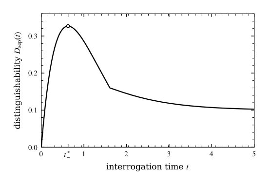
<figcaption class="paper-figure-caption"><b>Fig 2.</b> FIG. 2: Boundary-branch timing for the rates in Eq. (61). The finite maximum occurs at t∗ −≃0.6286, and side entanglement gives no improvement because ζ(t) = 0.</figcaption>
</figure>
<figure class="paper-figure-card">
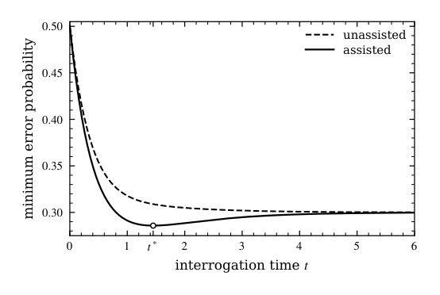
<figcaption class="paper-figure-caption"><b>Fig 3.</b> FIG. 3: Minimum error probability versus interrogation time for the rates in Eq. (63). The unassisted infimum p∗ E = 0.3 is reached only asymptotically, whereas the entanglement-assisted strategy reaches a smaller error probability ep ∗ E ≃0.2858 at the finite time t∗≃1.4508.</figcaption>
</figure>
<figure class="paper-figure-card">
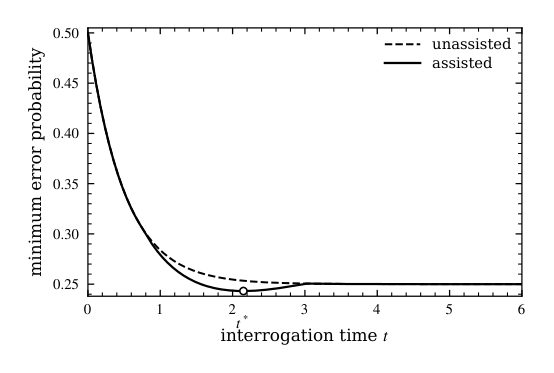
<figcaption class="paper-figure-caption"><b>Fig 4.</b> FIG. 4: Threshold example for discriminating the damping process (1, 1, 0) from the pure-dephasing process (0, 0, r), with representative value r = 0.1 &lt; rc. The unassisted infimum is p∗ E = 1/4, while the assisted strategy reaches the smaller value ep ∗ E ≃0.2432 at finite time.</figcaption>
</figure>
<figure class="paper-figure-card">
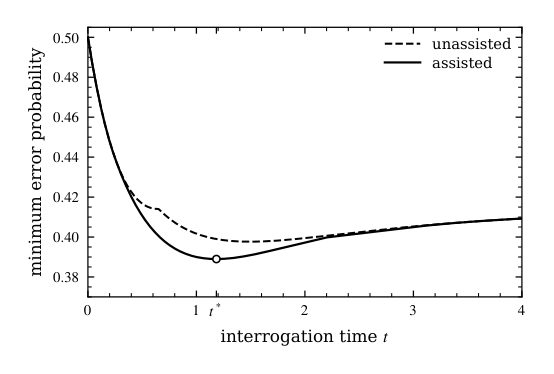
<figcaption class="paper-figure-caption"><b>Fig 5.</b> FIG. 5: Entanglement advantage from Proposition 1(iii) for the rates in Eq. (72). The assisted value at finite time is larger than the globally optimized unassisted value.</figcaption>
</figure>
</div>

<p><strong>Summary.</strong> This paper analyzes how best to discriminate between two noisy qubit processes undergoing amplitude damping by optimizing both the input probe state and the measurement time. It rigorously proves that using an entangled probe can yield a significantly lower error rate at any finite time compared to the best unassisted strategy, which only approaches this limit asymptotically.</p>
<p><strong>Why it may be interesting.</strong> This work provides rigorous quantitative bounds on the resource utility of quantum entanglement in practical open-system measurements, distinguishing between static vs. time-dependent advantages for characterizing decoherence channels.</p>
<details>
<summary>Detailed structure</summary>
<p><strong>Main problem.</strong> The study focuses on determining the minimum error probability for discriminating between two distinct qubit dynamical processes governed by phase-covariant amplitude-damping Lindbladians.</p>
<p><strong>Main result.</strong> Entanglement assistance allows for a strictly lower minimum error probability at finite interrogation times compared to the best achievable unassisted strategy, which only approaches this value asymptotically.</p>
<p><strong>Method.</strong> The authors use quantum information theory tools, including trace-norm and diamond-norm distinguishability measures, optimizing over both the input probe state (including entanglement) and the interrogation time $t$.</p>
<p><strong>Model / system.</strong> The system involves two qubits undergoing dynamics described by a master equation representing phase-covariant amplitude-damping Lindbladians. The analysis is performed in a single-use scenario.</p>
<p><strong>Key observables.</strong> Minimum error probability ($p_E, e_p$), optimal trace-norm distinguishability ($D_{	ext{sep}}(t)$), and entanglement-assisted distinguishability ($D_{	ext{ent}}(t)$).</p>
<p><strong>Important parameters / regimes.</strong> The damping rates ($\gamma_+$, $\gamma_-$, $\gamma_z$) define the dynamics, and time $t$ is a crucial optimization variable.</p>
<p><strong>Assumptions / limitations.</strong> The analysis assumes the underlying dynamics are phase-covariant amplitude-damping semigroups; for entanglement assistance, it leverages common U(1) phase covariance to simplify the optimization.</p>
<p><strong>Figures summary.</strong> Figures illustrate the comparison of minimum error probabilities versus time, demonstrating finite-time advantages achieved by entangled probes over unassisted ones, and show threshold behavior for this advantage.</p>
<p><strong>Paper structure.</strong> The paper first establishes the problem setup using distinguishability measures. It then analyzes the unassisted case, deriving closed forms for optimal strategies on different branches. The core contribution involves showing how entanglement reduces the optimization to a one-parameter Schmidt family, leading to fixed-time and time-optimized advantage criteria.</p>
</details>
<details>
<summary>Abstract</summary>
<p>We analyze minimum-error discrimination of two qubit dynamical processes generated by phase-covariant amplitude-damping Lindbladians in a single-use scenario. The optimization involves both the input probe, possibly entangled with an isolated ancilla, and the interrogation time. For unassisted probes we obtain a closed expression for the optimal trace-norm distinguishability at fixed time, with distinct interior and boundary branches. For entanglement-assisted probes, the common phase covariance of the two channels reduces the diamond-norm optimization to a one-parameter Schmidt family. The resulting formula gives transparent sufficient conditions for fixed-time entanglement advantage and separates this local advantage from advantage after global optimization over time. We exhibit examples in which the best unassisted strategy is approached only asymptotically, whereas an entangled probe achieves a strictly smaller error probability at finite time.</p>
</details>
<p><sub><a href="#top">↑ back to top</a></sub></p>

<p><a id="paper-2607.03534"></a></p>
<h3 id="fixed-point-tensor-network-for-compactified-boson-conformal-field-theory"><a href="http://arxiv.org/abs/2607.03534v1">Fixed-point tensor network for compactified boson conformal field theory</a></h3>
<p><strong>Authors:</strong> Gong Cheng, Dong-Yu Bao, Zheng-Cheng Gu<br>
<strong>Type:</strong> theory · <strong>Category:</strong> numerical methods · <strong>PDF:</strong> <a href="https://arxiv.org/pdf/2607.03534v1">https://arxiv.org/pdf/2607.03534v1</a><br>
<strong>Analysis basis:</strong> full PDF text, analyzed in chunks
<strong>Topic relevance:</strong> <code>methods for driven-dissipative</code> <strong>3/5</strong> · <code>Keldysh / 2PI / non-Gaussian methods</code> <strong>1/5</strong> · <code>analog quantum simulation</code> <strong>1/5</strong> · <code>correlated / nonlocal dissipation</code> <strong>1/5</strong> · <code>driven-dissipative phase transition</code> <strong>1/5</strong> · <code>entanglement &amp; information structure</code> <strong>1/5</strong> · <code>non-equilibrium dynamics</code> <strong>1/5</strong> · <code>non-equilibrium universality</code> <strong>1/5</strong></p>
<div class="figure-strip-hint">↔ Scroll figures horizontally</div>
<div class="paper-figures-scroll">
<figure class="paper-figure-card">
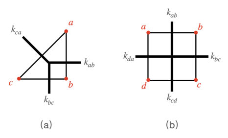
<figcaption class="paper-figure-caption"><b>Fig 1.</b> FIG. 1: Fixed-point tensor: (a) rank-3 tensor. (b) rank-4 tensor.</figcaption>
</figure>
<figure class="paper-figure-card">
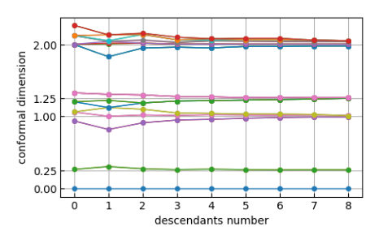
<figcaption class="paper-figure-caption"><b>Fig 2.</b> FIG. 2: Closed-string conformal dimension from rank-3 FP tensor with growing descendants cutoff at R = 1.</figcaption>
</figure>
<figure class="paper-figure-card">
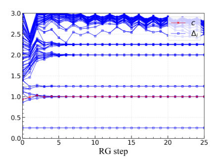
<figcaption class="paper-figure-caption"><b>Fig 3.</b> FIG. 3: RG spectrum obtained from the refined rank-3 FP tensor at R = 1, ΛD = 4, ΛN = 2, wmax = nmax = 2, χ = 20.</figcaption>
</figure>
<figure class="paper-figure-card">

<figcaption class="paper-figure-caption"><b>Fig 4.</b> FIG. 4: RG spectrum obtained from the rank-4 FP tensor at R = 1, ΛD = 4, wmax = 2, χ = 20.</figcaption>
</figure>
<figure class="paper-figure-card">
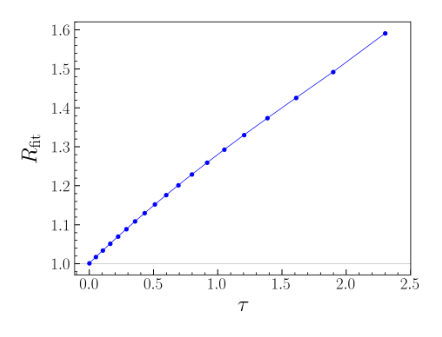
<figcaption class="paper-figure-caption"><b>Fig 5.</b> FIG. 5: Change of the radius R when varying τ. τ = 0 corresponds to the radius R = 1.</figcaption>
</figure>
</div>

<p><strong>Summary.</strong> This work develops a novel fixed-point tensor network approach to describe irrational Conformal Field Theories, using the compactified boson model as a test case. By constructing tensors from boundary data and analyzing them via Tensor Complex Renormalization, the authors successfully reproduce known physical spectra and map out continuous flow paths in the theory's moduli space.</p>
<p><strong>Why it may be interesting.</strong> While focused on CFT, the core methodology—using tensor networks (TCR) to simulate complex quantum field theory dynamics and RG flows—is a powerful numerical technique applicable to strongly correlated systems or open quantum systems where exact diagonalization is impossible.</p>
<details>
<summary>Detailed structure</summary>
<p><strong>Main problem.</strong> The primary goal is extending fixed-point tensor network constructions from rational CFTs to irrational theories, specifically using the 2D compactified boson model.</p>
<p><strong>Main result.</strong> The framework successfully generates a discrete lattice description for the irrational CFT, accurately reproducing the closed-string spectrum and identifying controllable exactly marginal deformations along the c=1 moduli space.</p>
<p><strong>Method.</strong> The authors employ Fixed-Point (FP) tensor networks, utilizing boundary data to construct tensors that are then analyzed using the Tensor Complex Renormalization (TCR) algorithm for RG flow analysis.</p>
<p><strong>Model / system.</strong> The system studied is the 2D compactified boson conformal field theory, which serves as an archetypal irrational CFT. The construction relies on mapping correlation functions onto tensor network contractions involving boundary conditions.</p>
<p><strong>Key observables.</strong> Closed-string spectrum (conformal dimensions $\Delta$), central charge ($c$), and scaling dimensions ($\Delta$) extracted via RG flow analysis.</p>
<p><strong>Important parameters / regimes.</strong> The compactification radius $R$, the deformation parameter $    au$ or $r$, and the finite grid size $\Lambda$ used for numerical approximation.</p>
<p><strong>Assumptions / limitations.</strong> The method requires replacing continuous boundary conditions with a finite, discretized lattice representation, which introduces necessary approximations.</p>
<p><strong>Figures summary.</strong> Figures illustrate the construction of rank-3 and rank-4 FP tensors, show the recovered closed-string spectrum via transfer matrix methods at various radii, and depict RG spectra derived from these tensor structures.</p>
<p><strong>Paper structure.</strong> The paper systematically builds the tensor network representation for correlation functions (rank-4 tensors), applies the TCR algorithm to analyze the resulting spectrum, and demonstrates how tuning parameters within the tensor structure generates continuous marginal deformations along moduli spaces.</p>
</details>
<details>
<summary>Abstract</summary>
<p>Fixed-point (FP) tensor networks provide a discrete spacetime representation of conformal field theories (CFTs), offering a new route toward understanding holographic duality, generalized symmetries, and even quantum gravity. In this work, we construct FP tensors for the 2D compactified boson theory at a generic compactification radius, an archetypal irrational CFT, using boundary (open-string) data with conformal boundary conditions. We show that the resulting tensors reproduce the closed-string spectrum with high accuracy and generate stable renormalization-group (RG) flows under the tensor complex renormalization algorithm. Moreover, we identify a controllable exactly marginal deformation at the level of a single tensor, enabling flows that move continuously along the $c=1$ moduli space. This framework establishes a concrete lattice-level route toward describing a broad class of 2D irrational CFTs.</p>
</details>
<p><sub><a href="#top">↑ back to top</a></sub></p>

<p><a id="paper-2607.04320"></a></p>
<h3 id="fundamental-limits-on-state-preparation-for-an-open-qubit"><a href="http://arxiv.org/abs/2607.04320v1">Fundamental limits on state preparation for an open qubit</a></h3>
<p><strong>Authors:</strong> D. A. Abraamian, L. V. Lokutsievskiy, A. N. Pechen<br>
<strong>Type:</strong> theory · <strong>Category:</strong> quantum information and computing · <strong>PDF:</strong> <a href="https://arxiv.org/pdf/2607.04320v1">https://arxiv.org/pdf/2607.04320v1</a><br>
<strong>Analysis basis:</strong> full PDF text, analyzed in chunks
<strong>Topic relevance:</strong> <code>methods for driven-dissipative</code> <strong>3/5</strong> · <code>non-equilibrium dynamics</code> <strong>2/5</strong> · <code>Keldysh / 2PI / non-Gaussian methods</code> <strong>1/5</strong> · <code>correlated / nonlocal dissipation</code> <strong>1/5</strong> · <code>driven-dissipative phase transition</code> <strong>1/5</strong> · <code>quantum measurements</code> <strong>1/5</strong></p>
<div class="figure-strip-hint">↔ Scroll figures horizontally</div>
<div class="paper-figures-scroll">
<figure class="paper-figure-card">

<figcaption class="paper-figure-caption"><b>Fig 1.</b> FIG. 1. The first row shows the curve Γ ⊂∂R in the Bloch ball for α = γ/ω = 0.1, 0.3, 0.5 from left to right. The second row shows the intersection of the boundary ∂R with rxrz- plane for the same values of α.</figcaption>
</figure>
<figure class="paper-figure-card">

<figcaption class="paper-figure-caption"><b>Fig 2.</b> FIG. 2. Structure of the intersections of ∂R and T with the rxrz-plane {ry = 0} in the Bloch ball B.</figcaption>
</figure>
<figure class="paper-figure-card">
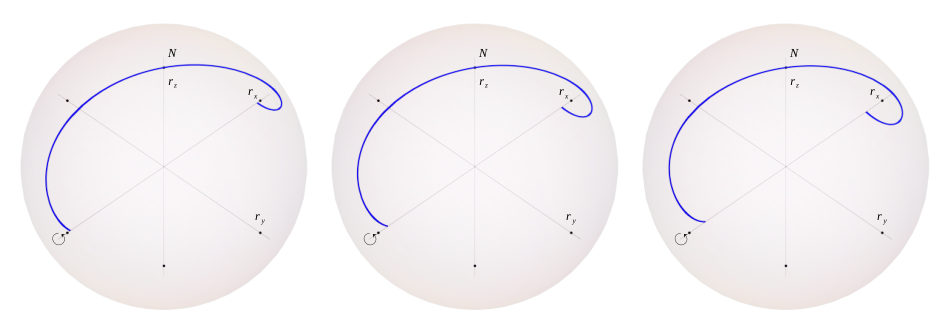
<figcaption class="paper-figure-caption"><b>Fig 3.</b> FIG. 3. Curve Γ ⊂∂R in the Bloch ball for γ/ω = 0.1, 0.3, 0.5 from left to right. The boundary ∂R is a surface of revolution obtained by rotating Γ about the rx-axis. The curve Γ is symmetric wrt reflection (rx, ry, rz) 7→(−rx, −ry, rz)</figcaption>
</figure>
<figure class="paper-figure-card">

<figcaption class="paper-figure-caption"><b>Fig 4.</b> FIG. 4. STL-local controllability</figcaption>
</figure>
<figure class="paper-figure-card">
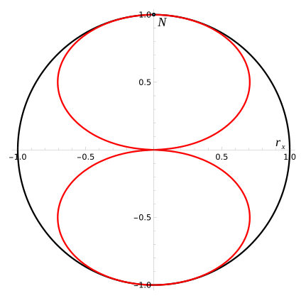
<figcaption class="paper-figure-caption"><b>Fig 5.</b> FIG. 5. figure-eight curve E(φ) for α = 0.1</figcaption>
</figure>
</div>

<p><strong>Summary.</strong> This paper rigorously determines the fundamental boundaries on what states can be prepared in an open qubit system under coherent control. It characterizes this boundary as a specific surface of revolution within the Bloch ball using advanced geometric control theory. The results provide essential, constructive bounds for quantum state preparation fidelity in dissipative quantum computing architectures.</p>
<p><strong>Why it may be interesting.</strong> This work provides a complete, rigorous geometric description of controllability for open quantum systems, which is foundational knowledge for designing robust quantum gates and state preparation routines in realistic noisy environments.</p>
<details>
<summary>Detailed structure</summary>
<p><strong>Main problem.</strong> The paper aims to analytically determine the ultimate geometric limits of state preparation (the reachable set) for an open qubit subjected to coherent control.</p>
<p><strong>Main result.</strong> It proves that the boundary of the reachable set is a surface of revolution around the $r_x$-axis, which is analytic except for two conical singularities. Furthermore, it provides explicit control protocols to approach any state on this boundary asymptotically.</p>
<p><strong>Method.</strong> The analysis uses geometric control theory applied to the Bloch sphere dynamics governed by a GKSL master equation, involving techniques like analyzing separatrices and constructing specific time-optimal control protocols.</p>
<p><strong>Model / system.</strong> The system is an open two-level quantum system (qubit) whose evolution is described by a Lindblad/GKSL master equation incorporating free Hamiltonian ($\mathrm{H}_0$), coherent driving ($V$), and dissipation rates ($\gamma$).</p>
<p><strong>Key observables.</strong> Bloch coordinates $(r_x, r_y, r_z)$ describing the state $
ho$, and the boundary surface $\partial R$.</p>
<p><strong>Important parameters / regimes.</strong> The ratio $\alpha = \gamma/\omega$ (dissipation rate to frequency) is a key parameter governing the geometry of the reachable set.</p>
<p><strong>Assumptions / limitations.</strong> Boundary points are only asymptotically reachable in finite time, and the analysis relies on local hyperbolic dynamics near equilibrium points.</p>
<p><strong>Figures summary.</strong> Figures illustrate the boundary curve $\Gamma$ defining the reachable set's boundary, its intersection with specific planes (like $r_y=0$), and projections of separatrices onto various coordinate planes.</p>
<p><strong>Paper structure.</strong> The paper progresses by first establishing the dynamics in Bloch coordinates, then characterizing the boundary using geometric control theory concepts like separatrices, culminating in the derivation of explicit protocols to approach these fundamental limits.</p>
</details>
<details>
<summary>Abstract</summary>
<p>We analytically determine the ultimate limits of state preparation in two-level open quantum systems driven by coherent control. For a dissipative qubit governed by a GKSL master equation, we give an exact characterization of the reachable set in the Bloch ball. Dissipation excludes a region of states in the Bloch ball which cannot be approached even under arbitrarily strong coherent driving, and we prove that this region has a nontrivial geometry whose boundary is a surface of revolution around the $x$-axis which is analytic except for two conical singularities. We derive a closed-form control protocol for moving on this boundary, and construct an explicit protocol that steers the system arbitrarily close to any prescribed boundary state. These results provide a complete geometric constructive description of reachable qubit states in the standard dissipative environment, establishing fundamental bounds on controllability and state-preparation fidelity for open two-level quantum systems.</p>
</details>
<p><sub><a href="#top">↑ back to top</a></sub></p>

<p><a id="paper-2607.03622"></a></p>
<h3 id="macroscopic-quantum-interference-of-the-center-of-mass-motion-of-levitated-superconducting-microparticles-enabled-by-magnetic-higher-order-traps"><a href="http://arxiv.org/abs/2607.03622v1">Macroscopic Quantum Interference of the Center-of-Mass Motion of Levitated Superconducting Microparticles enabled by Magnetic Higher-Order Traps</a></h3>
<p><strong>Authors:</strong> Jaume Cunill-Subiranas, Fabian Resare, Suocheng Zhao, Sofia Qvarfort, A. Metelmann, Carles Navau, Witlef Wieczorek<br>
<strong>Type:</strong> both · <strong>Category:</strong> other · <strong>PDF:</strong> <a href="https://arxiv.org/pdf/2607.03622v1">https://arxiv.org/pdf/2607.03622v1</a><br>
<strong>Analysis basis:</strong> full PDF text, analyzed in chunks
<strong>Topic relevance:</strong> <code>Keldysh / 2PI / non-Gaussian methods</code> <strong>3/5</strong> · <code>quantum measurements</code> <strong>2/5</strong> · <code>analog quantum simulation</code> <strong>1/5</strong> · <code>driven-dissipative phase transition</code> <strong>1/5</strong> · <code>methods for driven-dissipative</code> <strong>1/5</strong> · <code>non-equilibrium dynamics</code> <strong>1/5</strong></p>
<div class="figure-strip-hint">↔ Scroll figures horizontally</div>
<div class="paper-figures-scroll">
<figure class="paper-figure-card">

<figcaption class="paper-figure-caption"><b>Fig 1.</b> Figure 1. Harmonic and anharmonic magnetic traps for su- perconducting particles. Coil configurations, magnetic fields, and mechanical potentials for a magnetic quadrupole (a,d,g), magnetic hexapole (b,e,h), and double-well potential obtained from the superposition of a uniform magnetic field and mag- netic hexapole (c,f,i). These fields are induced in the central region of a suitable arrangement of coils, all of them with cylindrical symmetry in the z-direction. The crosses and dots indicate the sense of the current in the coils. Equal magni- tudes of currents are represented by the same colours. The magnetic field modulus is shown for small particles Rp ≪rrms (d-f) and large particles Rp...</figcaption>
</figure>
<figure class="paper-figure-card">

<figcaption class="paper-figure-caption"><b>Fig 2.</b> Figure 2. Classical dynamics of the motion of a 1 µm radius particle. We show Wigner functions and their marginal probability distributions in position (top panels) and momentum (side panels) at different times, given in terms of the original harmonic oscillator time scale. State evolution in (a,b,c) the DP potential (parameters: ♣in Tab. III), (d,e,f) the DWP potential (parameters: ♠in Tab. III), and (g,h,i) the D-DWP potential for an initial state displaced by 35zzpf (parameters: ♠in Tab. III). In the case of the DWP and D-DWP potentials, the region of m &gt; 1 according to condition Eq. (C12) is shaded, where the motion is constrained to one half of the double well. Note that the initial...</figcaption>
</figure>
<figure class="paper-figure-card">

<figcaption class="paper-figure-caption"><b>Fig 3.</b> Figure 3. Non-Gaussian motional state of a levitated superconducting microparticle. DP case (parameters: ♣in Tab. III): The motion is initially near ground-state cooled (n = 0.07) in a harmonic potential, including very weak coupling to the environment (Q = 1012). At time t = 0, the z4-potential is abruptly switched on, while maintaining B3 = Bini 3 . The upper panel shows the evolution of the Wigner function, the middle panel shows the switching of coils to realize certain magnetic fields, and the lowermost panel shows the position probability distribution P(z) as well as the potential Uz. We observe that the z-motion first experiences motional squeezing, followed by a generation of...</figcaption>
</figure>
<figure class="paper-figure-card">

<figcaption class="paper-figure-caption"><b>Fig 4.</b> Fig. 5(a) and Fig. 5(c) show a systematic decrease of the fringe amplitude and wavenumber, respectively, with the initial phonon occupation. Interestingly, for short protocol times, i.e., around ω0t/2π ∼10, we observe that a non-zero phonon number results in the largest fringe amplitude, see Fig. 5(b). For longer protocol times, the maximum fringe amplitude increases and shifts towards smaller phonon numbers. This behavior can be under- stood by considering the mean period time ⟨τ⟩in the DP potential and its dependence on the initial conditions. A larger initial phonon number results in a faster timescale for the dynamics such that the nonlinearity of the DP can impact the state more...</figcaption>
</figure>
<figure class="paper-figure-card">

<figcaption class="paper-figure-caption"><b>Fig 5.</b> Figure 4. Discerning quantum from classical dynamics in the DP protocol. (a) Probability distribution of the position quadrature for an initial phonon occupation of n = 0 (dark purple, straight) and n = 3.5 (light purple, dashed), com- pared to the classical dynamics (black). For these simulations, Q = ∞. The inset shows the difference between the quantum and classical probability distributions ∆P. (b) Fourier trans- formation of ∆P, restricted to the respective highlighted areas in the inset of (a). Gaussian fits (dashed lines) are used to extract the peak wavenumber kmax and maximal amplitude F[∆P](kmax).</figcaption>
</figure>
</div>

<p><strong>Summary.</strong> The paper details the use of advanced magnetic traps, generated by higher-order multipoles, to confine levitated superconducting microparticles. This confinement creates anharmonic potentials necessary for inducing nonclassical quantum motion in the particle's center-of-mass. The research paves the way for fundamental experiments testing the boundary between classical and quantum mechanics using massive mechanical oscillators.</p>
<p><strong>Why it may be interesting.</strong> This work directly bridges quantum mechanics (quantum interference, non-Gaussian states) with macroscopic mechanical systems and superconducting materials, making it highly relevant to open quantum systems and quantum sensing in AMO physics.</p>
<details>
<summary>Detailed structure</summary>
<p><strong>Main problem.</strong> The central goal is generating and observing macroscopic quantum interference effects in the center-of-mass motion of levitated superconducting microparticles.</p>
<p><strong>Main result.</strong> The authors demonstrate that using higher-order multipole magnetic traps allows for the creation of anharmonic potentials capable of realizing non-Gaussian motional states, opening a path to study the quantum-to-classical transition with massive objects.</p>
<p><strong>Method.</strong> The analysis involves solving the dynamics of the center-of-mass motion in phase space, utilizing Wigner function representations and analyzing specific nonlinear potential forms like Duffing or double-well potentials.</p>
<p><strong>Model / system.</strong> The system is a superconducting microparticle levitated and trapped by static magnetic fields generated via higher-order multipole coils. The dynamics are governed by the particle's interaction with an anharmonic potential $U(r)$ derived from the applied field $\mathbf{B}_a$.</p>
<p><strong>Key observables.</strong> Non-Gaussian motional states, measurement of particle position to distinguish classical vs. quantum behavior.</p>
<p><strong>Important parameters / regimes.</strong> The nonlinearity scale is set below nanometers (hundred times the zero-point motion); trap potentials are defined by magnetic field coefficients ($b_1, b_2, b_3$).</p>
<p><strong>Assumptions / limitations.</strong> It is assumed that the superconducting particle remains in a state where its dynamics can be effectively modeled by these anharmonic potentials, and that rapid switching of fields is possible.</p>
<p><strong>Figures summary.</strong> Figure 1 illustrates various magnetic traps (harmonic/anharmonic) generated by coil configurations. Figure 2 shows classical trajectory solutions for different nonlinear potential types (DP, DWP).</p>
<p><strong>Paper structure.</strong> The paper first establishes the physical platform and the role of higher-order traps in creating anharmonic potentials. It then analyzes the resulting dynamics using phase space methods, deriving specific protocols to generate nonclassical states before concluding with implications for fundamental physics tests.</p>
</details>
<details>
<summary>Abstract</summary>
<p>We show how magnetostatic higher-order multipole traps can be used to generate macroscopic quantum interference of the motion of levitated superconducting microparticles. An appropriate combination of multipolar magnetic fields offers great versatility in constructing various trap potentials, including anharmonic trap potentials such as Duffing or double-well types. Crucially, the anharmonic trap potentials realize a nonlinearity on the order of hundred times the zero-point motion, i.e., on a length scale below nanometers. These anharmonic potentials allow for the generation of quantum features of the center-of-mass motion of a magnetically levitated superconducting microparticle. Importantly, they can be easily generated with a static arrangement of coils, requiring only that the current running through them is tunable. We propose protocols exploiting the versatility of the magnetic trap landscape to generate non-Gaussian motional states. We solve the dynamics of the center-of-mass motion of the particle in phase space and analyze its parameter dependence. Furthermore, we give a recipe to distinguish classical from quantum behavior in a statistically meaningful way through measurement of the position of the particle. Our results open a path to accessing the quantum regime of the center-of-mass motion of objects with masses larger than picogram, i.e., $10^{13}$ atomic mass units. This will enable fundamental physics experiments for studying the transition between quantum and classical behavior, exploring the intersection between quantum physics and gravity as well as probing of certain types of dark matter.</p>
</details>
<p><sub><a href="#top">↑ back to top</a></sub></p>
<hr>
<p>
<a href="index.html">← Index</a>
 · <a href="papers_03.html">← Previous</a> · <a href="papers_05.html">Next →</a>
</p>
<hr>

</body>
</html>
